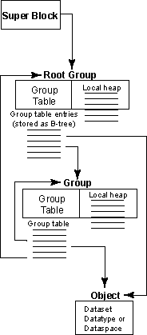
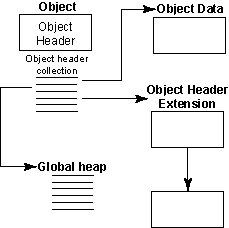
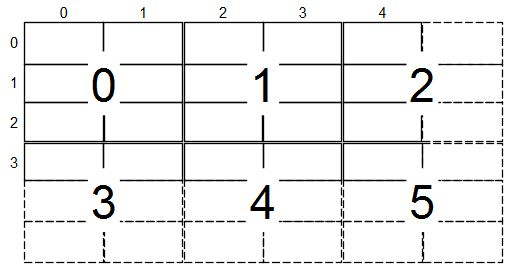

|
HDF5 Last Updated on 2026-09-03
The HDF5 Field Guide
|
|
HDF5 Last Updated on 2026-09-03
The HDF5 Field Guide
|
Navigate back: Main / Specifications
| Figure 1: Relationships among the HDF5 root group, other groups, and objects |
 |
| Figure 2: HDF5 objects – datasets, datatypes, or dataspaces |
 |
The format of an HDF5 file on disk encompasses several key ideas of the HDF4 and AIO file formats as well as addressing some shortcomings therein. The new format is more self-describing than the HDF4 format and is more uniformly applied to data objects in the file.
An HDF5 file appears to the user as a directed graph. The nodes of this graph are the higher-level HDF5 objects that are exposed by the HDF5 APIs:
At the lowest level, as information is actually written to the disk, an HDF5 file is made up of the following objects:
The HDF5 library uses these lower-level objects to represent the higher-level objects that are then presented to the user or to applications through the APIs. For instance, a group is an object header that contains a message that points to a local heap (for storing the links to objects in the group) and to a B-tree (which indexes the links). A dataset is an object header that contains messages that describe datatype, dataspace, layout, filters, external files, fill value, and other elements with the layout message pointing to either a raw data chunk or to a B-tree that points to raw data chunks.
This document describes the lower-level data objects; the higher-level objects and their properties are described in the HDF5 User Guide.
Three levels of information comprise the file format. Level 0 contains basic information for identifying and defining information about the file. Level 1 information contains the information about the pieces of a file shared by many objects in the file (such as a B-trees and heaps). Level 2 is the rest of the file and contains all of the data objects with each object partitioned into header information, also known as metadata, and data.
The various components of the lower-level data objects are described in pairs of tables. The first table shows the format layout, and the second table describes the fields. The titles of format layout tables begin with “Layout”. The titles of the tables where the fields are described begin with “Fields”. For example, the table that describes the format of the III.A.2. Disk Format: Level 1A2 - Version 2 B-trees has a title of “Layout: Version 2 B-tree Header”, and the fields in the version 2 B-tree header are described in the table titled “Fields: Version 2 B-tree Header”.
The sizes of various fields in the following layout tables are determined by looking at the number of columns the field spans in the table. There are exceptions:
Values for all fields in this document should be treated as unsigned integers, unless otherwise noted in the description of a field. Additionally, all metadata fields are stored in little-endian byte order.
All checksums used in the format are computed with the Jenkins’ lookup3 algorithm.
Whenever a bit flag or field is mentioned for an entry, bits are numbered from the lowest bit position in the entry.
Various format tables in this document have cells with “This space inserted only to align table nicely”. These entries in the table are just to make the table presentation nicer and do not represent any values or padding in the file.
The following sections have been changed or added for the 2.0 release:
The following sections have been changed or added for the 1.12 release:
The following sections have been changed or added for the 1.10 release:
The superblock may begin at certain predefined offsets within the HDF5 file, allowing a block of unspecified content for users to place additional information at the beginning (and end) of the HDF5 file without limiting the HDF5 library’s ability to manage the objects within the file itself. This feature was designed to accommodate wrapping an HDF5 file in another file format or adding descriptive information to an HDF5 file without requiring the modification of the actual file’s information. The superblock is located by searching for the HDF5 file signature at byte offset 0, byte offset 512 and at successive locations in the file, each a multiple of two of the previous location, in other words, at these byte offsets: 0, 512, 1024, 2048, and so on.
The superblock is composed of the format signature, followed by a superblock version number and information that is specific to each version of the superblock.
Currently, there are four versions of the superblock format:
Version 0 and 1 of the superblock are described below:
| byte | byte | byte | byte |
|---|---|---|---|
Format Signature (8 bytes) | |||
| Version # of Superblock | Version # of File’s Free Space Storage | Version # of Root Group Symbol Table Entry | Reserved (zero) |
| Version # of Shared Header Message Format | Size of Offsets | Size of Lengths | Reserved (zero) |
| Group Leaf Node K | Group Internal Node K | ||
| File Consistency Flags | |||
| Indexed Storage Internal Node K1 | Reserved (zero)1 | ||
| Base AddressO | |||
| Address of File Free Space InfoO | |||
| End of File AddressO | |||
| Driver Information Block AddressO | |||
| Root Group Symbol Table Entry | |||
| Field Name | Description | |||||||||||||||||||||||||||
|---|---|---|---|---|---|---|---|---|---|---|---|---|---|---|---|---|---|---|---|---|---|---|---|---|---|---|---|---|
| Format Signature | This field contains a constant value and can be used to quickly identify a file as being an HDF5 file. The constant value is designed to allow easy identification of an HDF5 file and to allow certain types of data corruption to be detected. The file signature of an HDF5 file always contains the following values:
This signature both identifies the file as an HDF5 file and provides for immediate detection of common file-transfer problems. The first two bytes distinguish HDF5 files on systems that expect the first two bytes to identify the file type uniquely. The first byte is chosen as a non-ASCII value to reduce the probability that a text file may be misrecognized as an HDF5 file; also, it catches bad file transfers that clear bit 7. Bytes two through four name the format. The CR-LF sequence catches bad file transfers that alter newline sequences. The control-Z character stops file display under MS-DOS. The final line feed checks for the inverse of the CR-LF translation problem. (This is a direct descendent of the PNG file signature.) This field is present in version 0+ of the superblock. | |||||||||||||||||||||||||||
| Version Number of the Superblock | This value is used to determine the format of the information in the superblock. When the format of the information in the superblock is changed, the version number is incremented to the next integer and can be used to determine how the information in the superblock is formatted. Values of 0, 1 and 2 are defined for this field (the format of version 2 is described below, not here). This field is present in version 0+ of the superblock. | |||||||||||||||||||||||||||
| Version Number of the File’s Free Space Information | This value is used to determine the format of the file’s free space information. The only value currently valid in this field is ‘0’, which indicates that the file’s free space index is as described in III.H. Disk Format: Level 1H - Free-space Index below. This field is present in version 0 and 1 of the superblock. | |||||||||||||||||||||||||||
| Version Number of the Root Group Symbol Table Entry | This value is used to determine the format of the information in the Root Group Symbol Table Entry. When the format of the information in that field is changed, the version number is incremented to the next integer and can be used to determine how the information in the field is formatted. The only value currently valid in this field is ‘0’, which indicates that the root group symbol table entry is formatted as described in III.C. Disk Format: Level 1C - Symbol Table Entry below. This field is present in version 0 and 1 of the superblock. | |||||||||||||||||||||||||||
| Version Number of the Shared Header Message Format | This value is used to determine the format of the information in a shared object header message. Since the format of the shared header messages differs from the other private header messages, a version number is used to identify changes in the format. The only value currently valid in this field is ‘0’, which indicates that shared header messages are formatted as described in IV.A.3.p. The Shared Message Table Message below. This field is present in version 0 and 1 of the superblock. | |||||||||||||||||||||||||||
| Size of Offsets | This value contains the number of bytes used to store addresses in the file. The values for the addresses of objects in the file are offsets relative to a base address, usually the address of the superblock signature. This allows a wrapper to be added after the file is created without invalidating the internal offset locations. This field is present in version 0+ of the superblock. | |||||||||||||||||||||||||||
| Size of Lengths | This value contains the number of bytes used to store the size of an object. This field is present in version 0+ of the superblock. | |||||||||||||||||||||||||||
| Group Leaf Node K | Each leaf node of a group B-tree will have at least this many entries but not more than twice this many. If a group has a single leaf node then it may have fewer entries. This value must be greater than zero. See the III.A. Disk Format: Level 1A - B-trees and B-tree Nodes below. This field is present in version 0 and 1 of the superblock. | |||||||||||||||||||||||||||
| Group Internal Node K | Each internal node of a group B-tree will have at least this many entries but not more than twice this many. If the group has only one internal node then it might have fewer entries. This value must be greater than zero. See the III.A. Disk Format: Level 1A - B-trees and B-tree Nodes below. This field is present in version 0 and 1 of the superblock. | |||||||||||||||||||||||||||
| File Consistency Flags | This field is unused and should be ignored. This field is present in version 0+ of the superblock. | |||||||||||||||||||||||||||
| Indexed Storage Internal Node K | Each internal node of a indexed storage B-tree will have at least this many entries but not more than twice this many. If the ndex storage B-tree has only one internal node then it might have fewer entries. This value must be greater than zero. See the III.A. Disk Format: Level 1A - B-trees and B-tree Nodes below. This field is present in version 1 of the superblock. | |||||||||||||||||||||||||||
| Base Address | This is the absolute file address of the first byte of the HDF5 data within the file. The library currently constrains this value to be the absolute file address of the superblock itself when creating new files; future versions of the library may provide greater flexibility. When opening an existing file and this address does not match the offset of the superblock, the library assumes that the entire contents of the HDF5 file have been adjusted in the file and adjusts the base address and end of file address to reflect their new positions in the file. Unless otherwise noted, all other file addresses are relative to this base address. This field is present in version 0+ of the superblock. | |||||||||||||||||||||||||||
| Address of Global Free Space Index | The file’s free space management is not persistent for version 0 and 1 of the superblock. Currently this field always contains the undefined address. This field is present in version 0 and 1 of the superblock. | |||||||||||||||||||||||||||
| End of File Address | This is the absolute file address of the first byte past the end of all HDF5 data. It is used to determine whether a file has been accidentally truncated and as an address where file data allocation can occur if space from the free list is not used. This field is present in version 0+ of the superblock. | |||||||||||||||||||||||||||
| Driver Information Block Address | This is the relative file address of the file driver information block which contains driver-specific information needed to reopen the file. If there is no driver information block then this entry should be the undefined address. This field is present in version 0 and 1 of the superblock. | |||||||||||||||||||||||||||
| Root Group Symbol Table Entry | This is the III.C. Disk Format: Level 1C - Symbol Table Entry of the root group, which serves as the entry-point into the group graph for the file. This field is present in version 0 and 1 of the superblock. |
Versions 2 and 3 of the superblock is described below:
| byte | byte | byte | byte |
|---|---|---|---|
Format Signature (8 bytes) | |||
| Version # of Superblock | Size of Offsets | Size of Lengths | File Consistency Flags |
Base AddressO | |||
Superblock Extension AddressO | |||
End of File AddressO | |||
Root Group Object Header AddressO | |||
| Superblock Checksum | |||
| Field Name | Description |
|---|---|
| Format Signature | This field is the same as described for versions 0 and 1 of the superblock. |
| Version Number of the Superblock | This field has a value of 2 and has the same meaning as for versions 0 and 1. |
| Size of Offsets | This field is the same as described for versions 0 and 1 of the superblock. |
| Size of Lengths | This field is the same as described for versions 0 and 1 of the superblock. |
| File Consistency Flags | For superblock version 2: This field is unused and should be ignored. For superblock version 3: This value contains flags to ensure file consistency for file locking. Currently, the following bit flags are defined:
Bit 0 should be set as the first action when a file has been opened for write access. Bit 2 should be set when a file has been opened for SWMR write access. These two bits should be cleared only as the final action when closing a file. This field is present in version 0+ of the superblock. The size of this field has been reduced from 4 bytes in superblock format versions 0 and 1 to 1 byte. |
| Base Address | This field is the same as described for versions 0 and 1 of the superblock. |
| Superblock Extension Address | The field is the address of the object header for the II.C. Disk Format: Level 0C - Superblock Extension. If there is no extension then this entry should be the undefined address. |
| End of File Address | This field is the same as described for versions 0 and 1 of the superblock. |
| Root Group Object Header Address | This is the address of the IV. Disk Format: Level 2 - Data Objects, which serves as the entry point into the group graph for the file. |
| Superblock Checksum | The checksum for the superblock. |
The driver information block lives right after the superblock. It is an optional region of the file which contains information needed by the file driver in order to reopen a file and may only exist when superblock version is less than 2. The format is described below:
| byte | byte | byte | byte |
|---|---|---|---|
| Version | Reserved | ||
| Driver Information Size | |||
Driver Identification (8 bytes) | |||
Driver Information (variable size) | |||
| Field Name | Description |
|---|---|
| Version | The version number of the Driver Information Block. This document describes version 0. |
| Driver Information Size | The size in bytes of the Driver Information field. |
| Driver Identification | This is an eight-byte ASCII string without null termination which identifies the driver and/or version number of the Driver Information block. The predefined driver encoded in this field by the HDF5 library is identified by the letters NCSA followed by the first four characters of the driver name. If the Driver Information Block is not the original version then the last letter(s) of the identification will be replaced by a version number in ASCII, starting with 0.Identification for user-defined drivers is also eight-byte long. It can be arbitrary but should be unique to avoid the four character prefix “NCSA”. |
| Driver Information | Driver information is stored in a format defined by the file driver (see description below). |
The two drivers encoded in the Driver Identification field are as follows:
The format of the Driver Information field for the above two drivers are described below:
| byte | byte | byte | byte |
|---|---|---|---|
| Member Mapping | Member Mapping | Member Mapping | Member Mapping |
| Member Mapping | Member Mapping | Reserved | Reserved |
Address of Member File 1 | |||
End of Address for Member File 1 | |||
Address of Member File 2 | |||
End of Address for Member File 2 | |||
... ... | |||
Address of Member File N | |||
End of Address for Member File N | |||
Name of Member File 1 (variable size) | |||
Name of Member File 2 (variable size) | |||
... ... | |||
Name of Member File N (variable size) | |||
| Field Name | Description | ||||||||||||||
|---|---|---|---|---|---|---|---|---|---|---|---|---|---|---|---|
| Member Mapping | These fields are integer values from 1 to 6 indicating how the data can be mapped to or merged with another type of data.
For example, if the third field has the value 3 and all the rest have the value 1, it means there are two files, one for raw data, and one for superblock, B-tree, global heap, local heap, and object header. | ||||||||||||||
| Reserved | These fields are reserved and should always be zero. | ||||||||||||||
| Address of Member File N | This field specifies the virtual address at which the member file starts. N is the number of member files. | ||||||||||||||
| End of Address for Member File N | This field is the end of allocated address for the member file. | ||||||||||||||
| Name of Member File N | This field is the null-terminated name of member file. And its length should be multiples of 8 bytes. Additional bytes will be padded with NULLs. The default naming convention is %s-X.h5, where X is one of the letters s (for superblock), b (for B-tree), r (for raw data), g (for global heap), l (for local heap), and o (for object header). The name for the whole HDF5 file will substitute the s in the string. |
| byte | byte | byte | byte |
|---|---|---|---|
Size of Member File | |||
| Field Name | Description |
|---|---|
| Size of Member File | This field is the size of the member file in the family of files. |
The superblock extension is used to store superblock metadata which is either optional, or added after the version of the superblock was defined. Superblock extensions may only exist when version 2+ or later of the superblock is used. A superblock extension is an object header which may hold the following messages:
B-trees allow flexible storage for objects which tend to grow in ways that cause the object to be stored discontiguously. B-trees are described in various algorithms books including "Introduction to Algorithms" by Thomas H. Cormen, Charles E. Leiserson, and Ronald L. Rivest. The B-trees are used in several places in the HDF5 file format, when an index is needed for another data structure.
The version 1 B-tree structure described below is the original index structure. The version 1 B-trees are being phased out in favor of the version 2 B-trees described below. Note that both types of structures may be found in the same file depending on the application settings when creating the file.
Version 1 B-trees in HDF5 files an implementation of the B-tree. The sibling nodes at a particular level in the tree are stored in a doubly-linked list. See the “Efficient Locking for Concurrent Operations on B-trees” paper by Phillip Lehman and S. Bing Yao as published in the ACM Transactions on Database Systems, Vol. 6, No. 4, December 1981.
The B-trees implemented by the file format contain one more key than the number of children. In other words, each child pointer out of a B-tree node has a left key and a right key. The pointers out of internal nodes point to sub-trees while the pointers out of leaf nodes point to symbol nodes and raw data chunks. Aside from that difference, internal nodes and leaf nodes are identical.
| byte | byte | byte | byte |
|---|---|---|---|
| Signature | |||
| Node Type | Node Level | Entries Used | |
Address of Left SiblingO | |||
Address of Right SiblingO | |||
| Key 1 (variable size) | |||
Address of Child 1O | |||
| Key 2 (variable size) | |||
Address of Child 2O | |||
| ... | |||
| Key 2K (variable size) | |||
Address of Child 2KO | |||
| Key 2K+1 (variable size) | |||
| Field Name | Description | ||||||||
|---|---|---|---|---|---|---|---|---|---|
| Signature | The ASCII character string “TREE” is used to indicate the beginning of a B-tree node. This gives file consistency checking utilities a better chance of reconstructing a damaged file. | ||||||||
| Node Type | Each B-tree points to a particular type of data. This field indicates the type of data as well as implying the maximum degree K of the tree and the size of each Key field.
| ||||||||
| Node Level | The node level indicates the level at which this node appears in the tree (leaf nodes are at level zero). Not only does the level indicate whether child pointers point to sub-trees or to data, but it can also be used to help file consistency checking utilities reconstruct damaged trees. | ||||||||
| Entries Used | This determines the number of children to which this node points. All nodes of a particular type of tree have the same maximum degree, but most nodes will point to less than that number of children. The valid child pointers and keys appear at the beginning of the node and the unused pointers and keys appear at the end of the node. The unused pointers and keys have undefined values. | ||||||||
| Address of Left Sibling | This is the relative file address of the left sibling of the current node. If the current node is the left-most node at this level then this field is the undefined address. | ||||||||
| Address of Right Sibling | This is the relative file address of the right sibling of the current node. If the current node is the right-most node at this level then this field is the undefined address. | ||||||||
| Keys and Child Pointers | Each tree has 2K+1 keys with 2K child pointers interleaved between the keys. The number of keys and child pointers actually containing valid values is determined by the node’s Entries Used field. If that field is N then the B-tree contains N child pointers and N+1 keys. | ||||||||
| Key | The format and size of the key values is determined by the type of data to which this tree points. The keys are ordered and are boundaries for the contents of the child pointer; that is, the key values represented by child N fall between Key N and Key N+1. Whether the interval is open or closed on each end is determined by the type of data to which the tree points. The format of the key depends on the node type. For nodes of node type 0 (group nodes), the key is formatted as follows:
For nodes of node type 1 (chunked raw data nodes), the key is formatted as follows:
| ||||||||
| Child Pointer | The tree node contains file addresses of subtrees or data depending on the node level. Nodes at Level 0 point to data addresses, either raw data chunks or group nodes. Nodes at non-zero levels point to other nodes of the same B-tree. For raw data chunk nodes, the child pointer is the address of a single raw data chunk. For group nodes, the child pointer points to a III.C. Disk Format: Level 1C - Symbol Table Entry, which contains information for multiple symbol table entries. |
Conceptually, each B-tree node looks like this:
| key[0] | child[0] | key[1] | child[1] | key[2] | ; | ... | ... | key[N-1] | child[N-1] | key[N] |
where child[i] is a pointer to a sub-tree (at a level above Level 0) or to data (at Level 0). Each key[i] describes an item stored by the B-tree (a chunk or an object of a group node). The range of values represented by child[i] is indicated by key[i] and key[i+1].
The following question must next be answered: “Is the value described by key[i] contained in child[i-1] or in child[i]?” The answer depends on the type of tree. In trees for groups (node type 0) the object described by key[i] is the greatest object contained in child[i-1] while in chunk trees (node type 1) the chunk described by key[i] is the least chunk in child[i].
That means that key[0] for group trees is sometimes unused; it points to offset zero in the heap, which is always the empty string and compares as "less-than" any valid object name.
And key[N] for chunk trees is sometimes unused; it contains a chunk offset which compares as "greater-than" any other chunk offset and has a chunk byte size of zero to indicate that it is not actually allocated.
Version 2 (v2) B-trees are “traditional” B-trees, with one major difference. Instead of just using a simple pointer (or address in the file) to a child of an internal node, the pointer to the child node contains two additional pieces of information: the number of records in the child node itself, and the total number of records in the child node and all its descendants. Storing this additional information allows fast array-like indexing to locate the nth record in the B-tree.
The entry into a version 2 B-tree is a header which contains global information about the structure of the B-tree. The root node address field in the header points to the B-tree root node, which is either an internal or leaf node, depending on the value in the header’s depth field. An internal node consists of records plus pointers to further leaf or internal nodes in the tree. A leaf node consists of solely of records. The format of the records depends on the B-tree type (stored in the header).
| byte | byte | byte | byte |
|---|---|---|---|
| Signature | |||
| Version | Type | This space inserted only to align table nicely | |
| Node Size | |||
| Record Size | Depth | ||
| Split Percent | Merge Percent | This space inserted only to align table nicely | |
Root Node AddressO | |||
| Number of Records in Root Node | This space inserted only to align table nicely | ||
Total Number of Records in B-treeL | |||
| Checksum | |||
| Field Name | Description | ||||||||||||||||||||||||||
|---|---|---|---|---|---|---|---|---|---|---|---|---|---|---|---|---|---|---|---|---|---|---|---|---|---|---|---|
| Signature | The ASCII character string “BTHD” is used to indicate the header of a version 2 (v2) B-tree node. | ||||||||||||||||||||||||||
| Version | The version number for this B-tree header. This document describes version 0. | ||||||||||||||||||||||||||
| Type | This field indicates the type of B-tree:
| ||||||||||||||||||||||||||
| Node Size | This is the size in bytes of all B-tree nodes. | ||||||||||||||||||||||||||
| Record Size | This field is the size in bytes of the B-tree record. | ||||||||||||||||||||||||||
| Depth | This is the depth of the B-tree. | ||||||||||||||||||||||||||
| Split Percent | The percent full that a node needs to increase above before it is split. | ||||||||||||||||||||||||||
| Merge Percent | The percent full that a node needs to be decrease below before it is split. | ||||||||||||||||||||||||||
| Root Node Address | This is the address of the root B-tree node. A B-tree with no records will have the undefined address in this field. | ||||||||||||||||||||||||||
| Number of Records in Root Node | This is the number of records in the root node. | ||||||||||||||||||||||||||
| Total Number of Records in B-tree | This is the total number of records in the entire B-tree. | ||||||||||||||||||||||||||
| Checksum | This is the checksum for the B-tree header. |
| byte | byte | byte | byte |
|---|---|---|---|
| Signature | |||
| Version | Type | Record #0, Record #1, ... Record #(R-1) (variable size) | |
Child Node Pointer #0O | |||
Number of Records for Child Node #0 (variable size) | |||
Total Number of Records for Child Node #0 (optional, variable size) | |||
Child Node Pointer #1O | |||
Number of Records for Child Node #1 (variable size) | |||
Total Number of Records for Child Node #1 (optional, variable size) | |||
| ... | |||
Child Node Pointer #RO | |||
Number of Records for Child Node #R (variable size) | |||
Total Number of Records for Child Node #R (optional, variable size) | |||
| Checksum | |||
| Field Name | Description |
|---|---|
| Signature | The ASCII character string “ BTIN ” is used to indicate the internal node of a B-tree. |
| Version | The version number for this B-tree internal node. This document describes version 0. |
| Type | This field is the type of the B-tree node. It should always be the same as the B-tree type in the header. |
| Record #i (i = 0 to (R-1)) | Let R be the number of records for this node: for the root node, R is given by the B-tree Header's Number of Records in Root Node field; for any other node, R is given by the Number of Records for Child Node #j field in this node's parent, specifically the pointer triplet whose Child Node Pointer #j gave this node's address. The size of this field is determined by R and the Record Size (the latter always from the header); the format of records depends on the type of B-tree. Because each internal node has one more child pointer triplet than it has records, this node has R+1 child node pointers, indexed #0 through #R (see below). |
| Child Node Pointer #j (j = 0 to R) | This field is the address of child #j pointed to by this internal node. Together with the following field, Number of Records for Child Node #j, and (where present) the field after that, Total Number of Records for Child Node #j, this forms what the rest of this table calls a pointer triplet — the repeating group of per-child fields between Child Node Pointer #j and Child Node Pointer #(j+1). |
| Number of Records for Child Node #j (j = 0 to R) | This is the number of records in child #j (see the Child Node Pointer field above). The number of bytes used to store this field is determined by the maximum possible number of records able to be stored in the child node. The maximum number of records in a child node is computed in the following way:
Note that leaf nodes do not encode any child pointer triplets, so the maximum number of records in a leaf node is just the Node Size minus the leaf node overhead, divided by the Record Size. Also note that the first level of internal nodes above the leaf nodes — the “twig” internal nodes — do not encode a Total Number of Records for Child Node #j value (since it would be the same as Number of Records for Child Node #j), so the maximum number of records in these nodes is computed with the equation above, but using (Child Node Pointer #j, Number of Records for Child Node #j) pairs instead of full triplets. The number of bytes used to encode this field is the least number of bytes required to encode the maximum number of records in a child node value for the child nodes below this level in the B-tree. For example, if the maximum number of child records is 123, one byte will be used to encode these values in this node; if the maximum number of child records is 20000, two bytes will be used to encode these values in this node; and so on. The maximum number of bytes used to encode these values is 8 (in other words, an unsigned 64-bit integer). |
| Total Number of Records for Child Node #j (j = 0 to R) | This is the total number of records for child #j and all its descendants. This field exists only in nodes whose depth in the B-tree node is greater than 1; see the note about “twig” internal nodes under Number of Records for Child Node #j above. The number of bytes used to store this field is determined by the maximum possible number of records able to be stored in the child node and its descendants. The maximum possible number of records able to be stored in a child node and its descendants is computed iteratively, in the following way: The maximum number of records in a leaf node is computed, then that value is used to compute the maximum possible number of records in the first level of internal nodes above the leaf nodes. Multiplying these two values together determines the maximum possible number of records in child node pointers for the level of nodes two levels above leaf nodes. This process is continued up to any level in the B-tree. The number of bytes used to encode this value is computed in the same way as for the Number of Records for Child Node #j field. |
| Checksum | This is the checksum for this node. |
| byte | byte | byte | byte |
|---|---|---|---|
| Signature | |||
| Version | Type | Record #0, Record #1, ... Record #(R-1) (variable size) | |
| Checksum | |||
| Field Name | Description |
|---|---|
| Signature | The ASCII character string “ BTLF “ is used to indicate the leaf node of a version 2 (v2) B-tree. |
| Version | The version number for this B-tree leaf node. This document describes version 0. |
| Type | This field is the type of the B-tree node. It should always be the same as the B-tree type in the header. |
| Record #i (i = 0 to (R-1)) | Let R be the number of records for this node: for the root node, R is given by the B-tree Header's Number of Records in Root Node field; for any other node, R is given by the Number of Records for Child Node #j field in this leaf's parent (always a “twig” internal node, so this is one of a pointer pair, not a full triplet). The size of this field is determined by R and the Record Size (the latter always from the header); the format of records depends on the type of B-tree. |
| Checksum | This is the checksum for this node. |
The record layout for each stored (in other words, non-testing) B-tree type is as follows:
| byte | byte | byte | byte |
|---|---|---|---|
Huge Object AddressO | |||
Huge Object LengthL | |||
Huge Object IDL | |||
| Field Name | Description |
|---|---|
| Huge Object Address | The address of the huge object in the file. |
| Huge Object Length | The length of the huge object in the file. |
| Huge Object ID | The heap ID for the huge object. |
| byte | byte | byte | byte |
|---|---|---|---|
Filtered Huge Object AddressO | |||
Filtered Huge Object LengthL | |||
| Filter Mask | |||
Filtered Huge Object Memory SizeL | |||
Huge Object IDL | |||
| Field Name | Description |
|---|---|
| Filtered Huge Object Address | The address of the filtered huge object in the file. |
| Filtered Huge Object Length | The length of the filtered huge object in the file. |
| Filter Mask | A 32-bit bit field indicating which filters have been skipped for this chunk. Each filter has an index number in the pipeline (starting at 0, with the first filter to apply) and if that filter is skipped, the bit corresponding to its index is set. |
| Filtered Huge Object Memory Size | The size of the de-filtered huge object in memory. |
| Huge Object ID | The heap ID for the huge object. |
| byte | byte | byte | byte |
|---|---|---|---|
Huge Object AddressO | |||
Huge Object LengthL | |||
| Field Name | Description |
|---|---|
| Huge Object Address | The address of the huge object in the file. |
| Huge Object Length | The length of the huge object in the file. |
| byte | byte | byte | byte |
|---|---|---|---|
Filtered Huge Object AddressO | |||
Filtered Huge Object LengthL | |||
| Filter Mask | |||
Filtered Huge Object Memory SizeL | |||
| Field Name | Description |
|---|---|
| Filtered Huge Object Address | The address of the filtered huge object in the file. |
| Filtered Huge Object Length | The length of the filtered huge object in the file. |
| Filter Mask | A 32-bit bit field indicating which filters have been skipped for this chunk. Each filter has an index number in the pipeline (starting at 0, with the first filter to apply) and if that filter is skipped, the bit corresponding to its index is set. |
| Filtered Huge Object Memory Size | The size of the de-filtered huge object in memory. |
| byte | byte | byte | byte |
|---|---|---|---|
| Hash of Name | |||
| ID (bytes 1-4) | |||
| ID (bytes 5-7) | |||
| Field Name | Description |
|---|---|
| Hash | This field is hash value of the name for the link. The hash value is the Jenkins’ lookup3 checksum algorithm applied to the link’s name. |
| ID | This is a 7-byte sequence of bytes and is the heap ID for the link record in the group’s fractal heap. |
| byte | byte | byte | byte |
|---|---|---|---|
Creation Order (8 bytes) | |||
| ID (bytes 1-4) | |||
| ID (bytes 5-7) | |||
| Field Name | Description |
|---|---|
| Creation Order | This field is the creation order value for the link. |
| ID | This is a 7-byte sequence of bytes and is the heap ID for the link record in the group’s fractal heap. |
| byte | byte | byte | byte |
|---|---|---|---|
| Message Location | This space inserted only to align table nicely | ||
| Hash | |||
| Reference Count | |||
Heap ID (8 bytes) | |||
| Field Name | Description | ||||||
|---|---|---|---|---|---|---|---|
| Message Location | This field Indicates the location where the message is stored:
| ||||||
| Hash | This field is hash value of the shared message. The hash value is the Jenkins’ lookup3 checksum algorithm applied to the shared message. | ||||||
| Reference Count | The number of objects which reference this message. | ||||||
| Heap ID | This is an 8-byte sequence of bytes and is the heap ID for the shared message in the shared message index’s fractal heap. |
| byte | byte | byte | byte |
|---|---|---|---|
| Message Location | This space inserted only to align table nicely | ||
| Hash | |||
| Reserved (zero) | Message Type | Object Header Index | |
Object Header AddressO | |||
| Field Name | Description | ||||||
|---|---|---|---|---|---|---|---|
| Message Location | This field Indicates the location where the message is stored:
| ||||||
| Hash | This field is hash value of the shared message. The hash value is the Jenkins’ lookup3 checksum algorithm applied to the shared message. | ||||||
| Message Type | The object header message type of the shared message. | ||||||
| Object Header Index | This field indicates that the shared message is the nth message of its type in the specified object header. | ||||||
| Object Header Address | The address of the object header containing the shared message. |
| byte | byte | byte | byte |
|---|---|---|---|
Heap ID (8 bytes) | |||
| Message Flags | This space inserted only to align table nicely | ||
| Creation Order | |||
| Hash of Name | |||
| Field Name | Description |
|---|---|
| Heap ID | This is an 8-byte sequence of bytes and is the heap ID for the attribute in the object’s attribute fractal heap. |
| Message Flags | The object header message flags for the attribute message. |
| Creation Order | This field is the creation order value for the attribute. |
| Hash | This field is hash value of the name for the attribute. The hash value is the Jenkins’ lookup3 checksum algorithm applied to the attribute’s name. |
| byte | byte | byte | byte |
|---|---|---|---|
Heap ID (8 bytes) | |||
| Message Flags | This space inserted only to align table nicely | ||
| Creation Order | |||
| Field Name | Description |
|---|---|
| Heap ID | This is an 8-byte sequence of bytes and is the heap ID for the attribute in the object’s attribute fractal heap. |
| Message Flags | The object header message flags for the attribute message. |
| Creation Order | This field is the creation order value for the attribute. |
| Field Name | Description | ||||||
|---|---|---|---|---|---|---|---|
| Address | This field is the address of the dataset chunk in the file. | ||||||
| Chunk Size | This field is the size of the dataset chunk in bytes. The length of this field is determined depending on the version of the associated layout message as follows:
| ||||||
| Filter Mask | This field is the filter mask which indicates the filter to skip for the dataset chunk. Each filter has an index number in the pipeline and if that filter is skipped, the bit corresponding to its index is set. | ||||||
| Dimension #i Scaled Offset (i = 0 to (d-1)) | See the Dimension #i Scaled Offset field description in the Type 10 Record Layout Fields table above. |
A group is an object internal to the file that allows arbitrary nesting of objects within the file (including other groups). A group maps a set of link names in the group to a set of relative file addresses of objects in the file. Certain metadata for an object to which the group points can be cached in object’s header.
An HDF5 object name space can be stored hierarchically by partitioning the name into components and storing each component as a link in a group. The link for a non-ultimate component points to the group containing the next component. The link for the last component points to the object being named.
One implementation a group is a collection of symbol table nodes indexed by a B-tree. Each symbol table node contains entries for one or more links. If an attempt is made to add a link to an already full symbol table node containing 2K entries, then the node is split and one node contains K symbols and the other contains K+1 symbols.
| byte | byte | byte | byte |
|---|---|---|---|
| Signature | |||
| Version Number | Reserved (zero) | Number of Symbols | |
Group Entries | |||
| Field Name | Description |
|---|---|
| Signature | The ASCII character string SNOD is used to indicate the beginning of a symbol table node. This gives file consistency checking utilities a better chance of reconstructing a damaged file. |
| Version Number | The version number for the symbol table node. This document describes version 1. (There is no version ‘0’ of the symbol table node) |
| Number of Symbols | Although all symbol table nodes have the same length, most contain fewer than the maximum possible number of link entries. This field indicates how many entries contain valid data. The valid entries are packed at the beginning of the symbol table node while the remaining entries contain undefined values. |
| Group Entries | Each link has an entry in the symbol table node. The format of the entry is described below. There are 2K entries in each group node, where K is the “Group Leaf Node K” value from the II.A. Disk Format: Level 0A - Format Signature and Superblock. |
Each symbol table entry in a symbol table node is designed to allow for very fast browsing of stored objects. Toward that design goal, the symbol table entries include space for caching certain constant metadata from the object header.
| byte | byte | byte | byte |
|---|---|---|---|
| Link Name OffsetL | |||
| Object Header AddressO | |||
| Cache Type | |||
| Reserved (zero) | |||
Scratch-pad Space (16 bytes) | |||
| Field Name | Description | ||||||||
|---|---|---|---|---|---|---|---|---|---|
| Link Name Offset | This is the byte offset into the group’s local heap for the name of the link. The name is null terminated. | ||||||||
| Object Header Address | Every object has an object header which serves as a permanent location for the object’s metadata. In addition to appearing in the object header, some of the object’s metadata can be cached in the scratch-pad space. | ||||||||
| Cache Type | The cache type is determined from the object header. It also determines the format for the scratch-pad space.
| ||||||||
| Reserved | These four bytes are present so that the scratch-pad space is aligned on an eight-byte boundary. They are always set to zero. | ||||||||
| Scratch-pad Space | This space is used for different purposes, depending on the value of the Cache Type field. Any meta-data about an object represented in the scratch-pad space is duplicated in the object header for that object. Furthermore, no data is cached in the group entry scratch-pad space if the object header for the object has a link count greater than one. |
The symbol table entry scratch-pad space is formatted according to the value in the Cache Type field.
If the Cache Type field contains the value zero ((0)) then no information is stored in the scratch-pad space.
If the Cache Type field contains the value one (1), then the scratch-pad space contains cached metadata for another object header in the following format:
| byte | byte | byte | byte |
|---|---|---|---|
| Address of B-treeO | |||
| Address of Name HeapO | |||
| Field Name | Description |
|---|---|
| Address of B-tree | This is the file address for the root of the group’s B-tree. |
| Address of Name Heap | This is the file address for the group’s local heap, in which are stored the group’s symbol names. |
If the Cache Type field contains the value two ((2)), then the scratch-pad space contains cached metadata for a symbolic link in the following format:
| byte | byte | byte | byte |
|---|---|---|---|
| Offset to Link Value | |||
| Field Name | Description |
|---|---|
| Offset to Link Value | The value of a symbolic link (that is, the name of the thing to which it points) is stored in the local heap. This field is the 4-byte offset into the local heap for the start of the link value, which is null terminated. |
A local heap is a collection of small pieces of data that are particular to a single object in the HDF5 file. Objects can be inserted and removed from the heap at any time. The address of a heap does not change once the heap is created. For example, a group stores addresses of objects in symbol table nodes with the names of links stored in the group’s local heap.
| byte | byte | byte | byte |
|---|---|---|---|
| Signature | |||
| Version | Reserved (zero) | ||
| Data Segment SizeL | |||
| Offset to Head of Free-listL | |||
| Address of Data SegmentO | |||
| Field Name | Description |
|---|---|
| Signature | The ASCII character string “HEAP ” is used to indicate the beginning of a heap. This gives file consistency checking utilities a better chance of reconstructing a damaged file. |
| Version | Each local heap has its own version number so that new heaps can be added to old files. This document describes version zero (0) of the local heap. |
| Data Segment Size | The total amount of disk memory allocated for the heap data. This may be larger than the amount of space required by the objects stored in the heap. The extra unused space in the heap holds a linked list of free blocks. |
| Offset to Head of Free-list | This is the offset within the heap data segment of the first free block (or the undefined address if there is no no free block). The free block contains “Size of Lengths” bytes that are the offset of the next free block (or the value ‘1’ if this is the last free block) followed by “Size of Lengths” bytes that store the size of this free block. The size of the free block includes the space used to store the offset of the next free block and the size of the current block, making the minimum size of a free block 2 * “Size of Lengths”. |
| Address of Data Segment | The data segment originally starts immediately after the heap header, but if the data segment must grow as a result of adding more objects, then the data segment may be relocated, in its entirety, to another part of the file. |
Objects within a local heap should be aligned on an 8-byte boundary.
Each HDF5 file has a global heap which stores various types of information which is typically shared between datasets. The global heap was designed to satisfy these goals:
The implementation of the heap makes use of the memory management already available at the file level and combines that with a new object called a collection to achieve goal B. The global heap is the set of all collections. Each global heap object belongs to exactly one collection and each collection contains one or more global heap objects. For the purposes of disk I/O and caching, a collection is treated as an atomic object, addressing goal A.
When a global heap object is deleted from a collection (which occurs when its reference count falls to zero), objects located after the deleted object in the collection are packed down toward the beginning of the collection and the collection’s global heap object #0 is created (if possible) or its size is increased to account for the recently freed space. There are no gaps between objects in each collection, with the possible exception of the final space in the collection, if it is not large enough to hold the header for the collection’s global heap object #0. These features address goal C.
The HDF5 library creates global heap collections as needed, so there may be multiple collections throughout the file. The set of all of them is abstractly called the “global heap”, although they do not actually link to each other, and there is no global place in the file where you can discover all of the collections. The collections are found simply by finding a reference to one through another object in the file. For example, data of variable-length datatype elements is stored in the global heap and is accessed via a global heap ID. The format for global heap IDs is described at the end of this section.
| byte | byte | byte | byte |
|---|---|---|---|
| Signature | |||
| Version | Reserved (zero) | ||
Collection SizeL | |||
Global Heap Object #1 | |||
Global Heap Object #2 | |||
... | |||
Global Heap Object #N | |||
Global Heap Object #0 (free space) | |||
| Field Name | Description |
|---|---|
| Signature | The ASCII character string “GCOL” is used to indicate the beginning of a collection. This gives file consistency checking utilities a better chance of reconstructing a damaged file. |
| Version | Each collection has its own version number so that new collections can be added to old files. This document describes version one (1) of the collections (there is no version zero (0)). |
| Collection Size | This is the size in bytes of the entire collection including this field. The default (and minimum) collection size is 4096 bytes which is a typical file system block size. This allows for 127 16-byte heap objects plus their overhead (the collection header of 16 bytes and the 16 bytes of information about each heap object). |
| Global Heap Object #1 through #N | Let N be the number of real (non-free-space) objects in this collection. N is not stored explicitly; a reader determines it by parsing objects sequentially, in the order stored, until either the free-space object (Global Heap Object #0, Heap Object Index 0) is reached or the Collection Size is exhausted. The objects are stored in any order with no intervening unused space. |
| Global Heap Object #0 | Global Heap Object #0 (zero), when present, represents the free space in the collection. Free space always appears at the end of the collection. If the free space is too small to store the header for Object #0 (described below) then the header is implied and is not written. The field Object Size for Object #0 indicates the amount of possible free space in the collection including the 16-byte header size of Object #0. |
| byte | byte | byte | byte |
|---|---|---|---|
| Heap Object Index | Reference Count | ||
| Reserved (zero) | |||
Object SizeL | |||
Object Data | |||
| Field Name | Description |
|---|---|
| Heap Object Index | Each object has a unique identification number within a collection. The identification numbers are chosen so that new objects have the smallest value possible with the exception that the identifier 0 always refers to the object which represents all free space within the collection. |
| Reference Count | All heap objects have a reference count field. An object which is referenced from some other part of the file will have a positive reference count. The reference count for Object #0 is always zero. |
| Reserved | Zero padding to align next field on an 8-byte boundary. |
| Object Size | This is the size of the object data stored for the object. The actual storage space allocated for the object data is rounded up to a multiple of eight. |
| Object Data | The object data is treated as a one-dimensional array of bytes to be interpreted by the caller. |
| byte | byte | byte | byte |
|---|---|---|---|
Collection AddressO | |||
| Object Index | |||
| Field Name | Description |
|---|---|
| Collection Address | This field is the address of the global heap collection where the data object is stored. |
| ID | This field is the index of the data object within the global heap collection. |
The layout for the global heap block used with virtual datasets is described below. For more information on global heaps, see “ III.E. Disk Format: Level 1E - Global Heap ”
There are two versions of the Virtual Dataset Global Heap Block format:
| byte | byte | byte | byte |
|---|---|---|---|
| Version | This space inserted only to align table nicely | ||
Num EntriesL | |||
Source Filename #1 (variable size) | |||
Source Dataset #1 (variable size) | |||
Source Selection #1 (variable size) | |||
Virtual Selection #1 (variable size) | |||
| . . . | |||
Source Filename #n (variable size) | |||
Source Dataset #n (variable size) | |||
Source Selection #n (variable size) | |||
Virtual Selection #n (variable size) | |||
| Checksum | |||
| byte | byte | byte | byte |
|---|---|---|---|
| Version | This space inserted only to align table nicely | ||
Num EntriesL | |||
| Flags #1 | This space inserted only to align table nicely | ||
Source Filename #1 (variable size) | |||
Source Dataset #1 (variable size) | |||
Source Selection #1 (variable size) | |||
Virtual Selection #1 (variable size) | |||
| . . . | |||
| Flags #n | This space inserted only to align table nicely | ||
Source Filename #n (variable size) | |||
Source Dataset #n (variable size) | |||
Source Selection #n (variable size) | |||
Virtual Selection #n (variable size) | |||
| Checksum | |||
| Field Name | Description | ||||||||||
|---|---|---|---|---|---|---|---|---|---|---|---|
| Version | The version number for the block; the value is 0 for version 0 format, 1 for version 1 format. | ||||||||||
| Num EntriesL | The number of entries in the block. | ||||||||||
| Flags #n | This field is a bit field containing additional information about the mapping. This field is present only in version 1 of the format.
| ||||||||||
| Source Filename #n (variable size) | The source file name where the source dataset is located. If the source filename is shared (bit 0 of flags is set), this is a "Size of Lengths" length unsigned integer containing the index into the array of mappings where the source filename is stored. For example, if the value stored here is 1, then the actual string value for this field is stored in the Source Filename 1 field. If the source filename is not shared, this is stored as a NULL terminated string. If the source file is the same as the virtual file (bit 2 of flags is set), this field is not present. For version 0 format, this is always stored as a NULL terminated string. | ||||||||||
| Source Dataset #n (variable size) | The source dataset name that is mapped to the virtual dataset. If the source dataset name is shared (bit 1 of flags is set), this is a "Size of Lengths" length unsigned integer containing the index into the array of mappings where the source dataset name is stored. For example, if the value stored here is 1, then the actual string value for this field is stored in the Source Dataset 1 field. If the source dataset name is not shared, this is stored as a NULL terminated string. For version 0 format, this is always stored as a NULL terminated string. | ||||||||||
| Source Selection #n (variable size) | The dataspace selection in the source dataset that is mapped to the virtual selection. | ||||||||||
| Virtual Selection #n (variable size) | This is the dataspace selection in the virtual dataset that is mapped to the source selection. | ||||||||||
| Checksum | This is the checksum for the block. |
Each fractal heap consists of a header and zero or more direct and indirect blocks (described below). The header contains general information as well as initialization parameters for the doubling table. The Address of Root Block field in the header points to the first direct or indirect block in the heap.
Fractal heaps are based on a data structure called a doubling table. A doubling table provides a mechanism for quickly extending an array-like data structure that minimizes the number of empty blocks in the heap, while retaining very fast lookup of any element within the array. More information on fractal heaps and doubling tables can be found in the RFC “A "Private" Heap for HDF5 .”
The fractal heap implements the doubling table structure with indirect and direct blocks. Indirect blocks in the heap do not actually contain data for objects in the heap, their “size” is abstract - they represent the indexing structure for locating the direct blocks in the doubling table. Direct blocks contain the actual data for objects stored in the heap.
All indirect blocks have a constant number of block entries in each row, called the width of the doubling table (see Table Width field in the header). The number of rows for each indirect block in the heap is determined by the size of the block that the indirect block represents in the doubling table (calculation of this is shown below) and is constant, except for the “root” indirect block, which expands and shrinks its number of rows as needed.
Blocks in the first two rows of an indirect block are Starting Block Size number of bytes in size. For example, if the row width of the doubling table is 4, then the first eight block entries in the indirect block are Starting Block Size number of bytes in size. The blocks in each subsequent row are twice the size of the blocks in the previous row. In other words, blocks in the third row are twice the Starting Block Size, blocks in the fourth row are four times the Starting Block Size, and so on. Entries for blocks up to the Maximum Direct Block Size point to direct blocks, and entries for blocks greater than that size point to further indirect blocks (which have their own entries for direct and indirect blocks). Starting Block Size and Maximum Direct Block Size are fields stored in the header.
The number of rows of blocks, nrows, in an indirect block is calculated by the following expression:
nrows = (log2(iblock_size) - log2(<Starting Block Size>)) + 1 where block_size is the size of the block that the indirect block represents in the doubling table. For example, to represent a block with block_size equals to 1024, and Starting Block Size equals to 256, three rows are needed.
The maximum number of rows of direct blocks, max_dblock_rows, in any indirect block of a fractal heap is given by the following expression:
max_dblock_rows = (log2(<Maximum Direct Block Size>) - log2(<Starting Block Size>)) + 2
Using the computed values for nrows and max_dblock_rows, along with the Width of the doubling table, the number of direct and indirect block entries (K and N in the indirect block description, below) in an indirect block can be computed:
K = MIN(nrows, max_dblock_rows) * Table Width
If nrows is less than or equal to max_dblock_rows, N is 0. Otherwise, N is simply computed:
N = K - (max_dblock_rows * Table Width)
The size of indirect blocks on disk is determined by the number of rows in the indirect block (computed above). The size of direct blocks on disk is exactly the size of the block in the doubling table.
| byte | byte | byte | byte |
|---|---|---|---|
| Signature | |||
| Version | This space inserted only to align table nicely | ||
| Heap ID Length | I/O Filters’ Encoded Length | ||
| Flags | This space inserted only to align table nicely | ||
| Maximum Size of Managed Objects | |||
Next Huge Object IDL | |||
v2 B-tree Address of Huge ObjectsO | |||
Amount of Free Space in Managed BlocksL | |||
Address of Managed Block Free Space ManagerO | |||
Amount of Managed Space in HeapL | |||
Amount of Allocated Managed Space in HeapL | |||
Offset of Direct Block Allocation Iterator in Managed SpaceL | |||
Number of Managed Objects in HeapL | |||
Size of Huge Objects in HeapL | |||
Number of Huge Objects in HeapL | |||
Size of Tiny Objects in HeapL | |||
Number of Tiny Objects in HeapL | |||
| Table Width | This space insertedonly to align table nicely | ||
Starting Block SizeL | |||
Maximum Direct Block SizeL | |||
| Maximum Heap Size | Starting # of Rows in Root Indirect Block | ||
Address of Root BlockO | |||
| Current # of Rows in Root Indirect Block | This space inserted only to align table nicely | ||
Size of Filtered Root Direct Block (optional)L | |||
| I/O Filter Mask (optional) | |||
| I/O Filter Information (optional, variable size) | |||
| Checksum | |||
| Field Name | Description | ||||||||
|---|---|---|---|---|---|---|---|---|---|
| Signature | The ASCII character string “FRHP” is used to indicate the beginning of a fractal heap header. This gives file consistency checking utilities a better chance of reconstructing a damaged file. | ||||||||
| Version | This document describes version 0. | ||||||||
| Heap ID Length | This is the length in bytes of heap object IDs for this heap. | ||||||||
| I/O Filters’ Encoded Length | This is the size in bytes of the encoded I/O Filter Information. | ||||||||
| Flags | This field is the heap status flag and is a bit field indicating additional information about the fractal heap.
| ||||||||
| Maximum Size of Managed Objects | This is the maximum size of managed objects allowed in the heap. Objects greater than this this are ‘huge’ objects and will be stored in the file directly, rather than in a direct block for the heap. | ||||||||
| Next Huge Object ID | This is the next ID value to use for a huge object in the heap. | ||||||||
| v2 B-tree Address of Huge Objects | This is the address of the III.A.2. Disk Format: Level 1A2 - Version 2 B-trees used to track huge objects in the heap. The type of records stored in the v2 B-tree will be determined by whether the address and length of a huge object can fit into a heap ID (if yes, it is a “directly” accessed huge object) and whether there is a filter used on objects in the heap. | ||||||||
| Amount of Free Space in Managed Blocks | This is the total amount of free space in managed direct blocks (in bytes). | ||||||||
| Address of Managed Block Free Space Manager | This is the address of the III.H. Disk Format: Level 1H - Free-space Index for managed blocks. | ||||||||
| Amount of Managed Space in Heap | This is the total amount of managed space in the heap (in bytes), essentially the upper bound of the heap’s linear address space. | ||||||||
| Amount of Allocated Managed Space in Heap | This is the total amount of managed space (in bytes) actually allocated in the heap. This can be less than the Amount of Managed Space in Heap field, if some direct blocks in the heap’s linear address space are not allocated. | ||||||||
| Offset of Direct Block Allocation Iterator in Managed Space | This is the linear heap offset where the next direct block should be allocated at (in bytes). This may be less than the Amount of Managed Space in Heap value because the heap’s address space is increased by a “row” of direct blocks at a time, rather than by single direct block increments. | ||||||||
| Number of Managed Objects in Heap | This is the number of managed objects in the heap. | ||||||||
| Size of Huge Objects in Heap | This is the total size of huge objects in the heap (in bytes). | ||||||||
| Number of Huge Objects in Heap | This is the number of huge objects in the heap. | ||||||||
| Size of Tiny Objects in Heap | This is the total size of tiny objects that are packed in heap IDs (in bytes). | ||||||||
| Number of Tiny Objects in Heap | This is the number of tiny objects that are packed in heap IDs. | ||||||||
| Table Width | This is the number of columns in the doubling table for managed blocks. This value must be a power of two. | ||||||||
| Starting Block Size | This is the starting block size to use in the doubling table for managed blocks (in bytes). This value must be a power of two. | ||||||||
| Maximum Direct Block Size | This is the maximum size allowed for a managed direct block. Objects inserted into the heap that are larger than this value (less the number of bytes of direct block prefix/suffix) are stored as ‘huge’ objects. This value must be a power of two. | ||||||||
| Maximum Heap Size | This is the maximum size of the heap’s linear address space for managed objects (in bytes). The value stored is the log2 of the actual value, that is: the number of bits of the address space. ‘Huge’ and ‘tiny’ objects are not counted in this value, since they do not store objects in the linear address space of the heap. | ||||||||
| Starting # of Rows in Root Indirect Block | This is the starting number of rows for the root indirect block. A value of 0 indicates that the root indirect block will have the maximum number of rows needed to address the heap’s Maximum Heap Size. | ||||||||
| Address of Root Block | This is the address of the root block for the heap. It can be the undefined address if there is no data in the heap. It either points to a direct block (if the Current # of Rows in the Root Indirect Block value is 0), or an indirect block. | ||||||||
| Current # of Rows in Root Indirect Block | This is the current number of rows in the root indirect block. A value of 0 indicates that Address of Root Block points to direct block instead of indirect block. | ||||||||
| Size of Filtered Root Direct Block | This is the size of the root direct block, if filters are applied to heap objects (in bytes). This field is only stored in the header if the I/O Filters’ Encoded Length is greater than 0. | ||||||||
| I/O Filter Mask | This is the filter mask for the root direct block, if filters are applied to heap objects. This mask has the same format as that used for the filter mask in chunked raw data records in a III.A.1. Disk Format: Level 1A1 - Version 1 B-trees. This field is only stored in the header if the I/O Filters’ Encoded Length is greater than 0. | ||||||||
| I/O Filter Information | This is the I/O filter information encoding direct blocks and huge objects, if filters are applied to heap objects. This field is encoded as a IV.A.3.l. The Data Storage - Filter Pipeline Message message. The size of this field is determined by I/O Filters’ Encoded Length. | ||||||||
| Checksum | This is the checksum for the header. |
| byte | byte | byte | byte |
|---|---|---|---|
| Signature | |||
| Version | This space inserted only to align table nicely | ||
Heap Header AddressO | |||
| Block Offset (variable size) | |||
| Checksum (optional) | |||
Object Data (variable size) | |||
| Field Name | Description |
|---|---|
| Signature | The ASCII character string “FHDB” is used to indicate the beginning of a fractal heap direct block. This gives file consistency checking utilities a better chance of reconstructing a damaged file. |
| Version | This document describes version 0. |
| Heap Header Address | This is the address for the fractal heap header that this block belongs to. This field is principally used for file integrity checking. |
| Block Offset | This is the offset of the block within the fractal heap’s address space (in bytes). The number of bytes used to encode this field is the Maximum Heap Size (in the heap’s header) divided by 8 and rounded up to the next highest integer, for values that are not a multiple of 8. This value is principally used for file integrity checking. |
| Checksum | This is the checksum for the direct block. This field is only present if bit 1 of Flags in the heap’s header is set. |
| Object Data | This section of the direct block stores the actual data for objects in the heap. The size of this section is determined by the direct block’s size minus the size of the other fields stored in the direct block (for example, the Signature, Version, and others including the Checksum if it is present). |
| byte | byte | byte | byte |
|---|---|---|---|
| Signature | |||
| Version | This space inserted only to align table nicely | ||
Heap Header AddressO | |||
| Block Offset (variable size) | |||
Child Direct Block #0 AddressO | |||
Size of Filtered Direct Block #0 (optional) L | |||
| Filter Mask for Direct Block #0 (optional) | |||
Child Direct Block #1 AddressO | |||
Size of Filtered Direct Block #1 (optional)L | |||
| Filter Mask for Direct Block #1 (optional) | |||
| ... | |||
Child Direct Block #K-1 AddressO | |||
Size of Filtered Direct Block #K-1 (optional)L | |||
| Filter Mask for Direct Block #K-1 (optional) | |||
Child Indirect Block #0 AddressO | |||
Child Indirect Block #1 AddressO | |||
| ... | |||
Child Indirect Block #N-1 AddressO | |||
| Checksum | |||
| Field Name | Description |
|---|---|
| Signature | The ASCII character string “FHIB” is used to indicate the beginning of a fractal heap indirect block. This gives file consistency checking utilities a better chance of reconstructing a damaged file. |
| Version | This document describes version 0. |
| Heap Header Address | This is the address for the fractal heap header that this block belongs to. This field is principally used for file integrity checking. |
| Block Offset | This is the offset of the block within the fractal heap’s address space (in bytes). The number of bytes used to encode this field is the Maximum Heap Size (in the heap’s header) divided by 8 and rounded up to the next highest integer, for values that are not a multiple of 8. This value is principally used for file integrity checking. |
| Child Direct Block #K Address | This field is the address of the child direct block. The size of the [uncompressed] direct block can be computed by its offset in the heap’s linear address space. |
| Size of Filtered Direct Block #K | This is the size of the child direct block after passing through the I/O filters defined for this heap (in bytes). If no I/O filters are present for this heap, this field is not present. |
| Filter Mask for Direct Block #K | This is the I/O filter mask for the filtered direct block. This mask has the same format as that used for the filter mask in chunked raw data records in a III.A.1. Disk Format: Level 1A1 - Version 1 B-trees. If no I/O filters are present for this heap, this field is not present. |
| Child Indirect Block #N Address | This field is the address of the child indirect block. The size of the indirect block can be computed by its offset in the heap’s linear address space. |
| Checksum | This is the checksum for the indirect block. |
An object in the fractal heap is identified by means of a fractal heap ID, which encodes information to locate the object in the heap. Currently, the fractal heap stores an object in one of three ways, depending on the object’s size:
| Type | Description | ||||||||||
|---|---|---|---|---|---|---|---|---|---|---|---|
| Tiny | When an object is small enough to be encoded in the heap ID, the object’s data is embedded in the fractal heap ID itself. There are two sub-types for this type of object: normal and extended. The sub-type for tiny heap IDs depends on whether the heap ID is large enough to store objects greater than 16 bytes or not. If the heap ID length is 18 bytes or smaller, the ‘normal’ tiny heap ID form is used. If the heap ID length is greater than 18 bytes in length, the “extended” form is used. See format description below for both sub-types. | ||||||||||
| Huge | When the size of an object is larger than Maximum Size of Managed Objects in the Fractal Heap Header, the object’s data is stored on its own in the file and the object is tracked/indexed via a version 2 B-tree. All huge objects for a particular fractal heap use the same v2 B-tree. All huge objects for a particular fractal heap use the same format for their huge object IDs. Depending on whether the IDs for a heap are large enough to hold the object’s retrieval information and whether I/O pipeline filters are applied to the heap’s objects, 4 sub-types are derived for huge object IDs for this heap:
| ||||||||||
| Managed | When the size of an object does not meet the above two conditions, the object is stored and managed via the direct and indirect blocks based on the doubling table. |
The specific format for each type of heap ID is described below:
| byte | byte | byte | byte |
|---|---|---|---|
| Version, Type & Length | This space inserted only to align table nicely | ||
Data (variable size) | |||
| Field Name | Description | ||||||||
|---|---|---|---|---|---|---|---|---|---|
| Version, Type, and Length | This is a bit field with the following definition:
| ||||||||
| Data | This is the data for the object. |
| byte | byte | byte | byte |
|---|---|---|---|
| Version, Type, and Length | Extended Length | This space inserted only to align table nicely | |
| Data (variable size) | |||
| Field Name | Description | ||||||||
|---|---|---|---|---|---|---|---|---|---|
| Version, Type, and Length | This is a bit field with the following definition:
| ||||||||
| Extended Length | This byte, together with the 4 bits in the previous byte, forms an unsigned 12-bit integer for holding the length of the tiny object. These 8 bits are bits 0-7 of the 12-bit integer formed. The value stored is one less than the actual length (since zero-length objects are not allowed to be stored in the heap). For example, an object of actual length 1 has an encoded length of 0, an object of actual length 2 has an encoded length of 1, and so on. | ||||||||
| Data | This is the data for the object. |
| byte | byte | byte | byte |
|---|---|---|---|
| Version and Type | This space inserted only to align table nicely | ||
v2 B-tree KeyL (variable size) | |||
| Field Name | Description | ||||||||
|---|---|---|---|---|---|---|---|---|---|
| Version and Type | This is a bit field with the following definition:
| ||||||||
| v2 B-tree Key | This field is the B-tree key for retrieving the information from the version 2 B-tree for huge objects needed to access the object. See the description of III.A.2. Disk Format: Level 1A2 - Version 2 B-trees records sub-type 1 & 2 for a description of the fields. New key values are derived from Next Huge Object ID in the Fractal Heap Header. |
| byte | byte | byte | byte |
|---|---|---|---|
| Version and Type | This space inserted only to align table nicely | ||
Address O | |||
Length L | |||
| Field Name | Description | ||||||||
|---|---|---|---|---|---|---|---|---|---|
| Version and Type | This is a bit field with the following definition:
| ||||||||
| Address | This field is the address of the object in the file. | ||||||||
| Length | This field is the length of the object in the file. |
| byte | byte | byte | byte |
|---|---|---|---|
| Version and Type | This space inserted only to align table nicely | ||
Address O | |||
Length L | |||
| Filter Mask | |||
De-filtered Size L | |||
| Field Name | Description | ||||||||
|---|---|---|---|---|---|---|---|---|---|
| Version and Type | This is a bit field with the following definition:
| ||||||||
| Address | This field is the address of the filtered object in the file. | ||||||||
| Length | This field is the length of the filtered object in the file. | ||||||||
| Filter Mask | This field is the I/O pipeline filter mask for the filtered object in the file. | ||||||||
| Filtered Size | This field is the size of the de-filtered object in the file. |
| byte | byte | byte | byte |
|---|---|---|---|
| Version and Type | This space inserted only to align table nicely | ||
| Offset (variable size) | |||
| Length (variable size) | |||
| Field Name | Description | ||||||||
|---|---|---|---|---|---|---|---|---|---|
| Version and Type | This is a bit field with the following definition:
| ||||||||
| Offset | This field is the offset of the object in the heap. This field’s size is the minimum number of bytes necessary to encode the Maximum Heap Size value (from the Fractal Heap Header). For example, if the value of the Maximum Heap Size is less than 256 bytes, this field is 1 byte in length, a Maximum Heap Size of 256-65535 bytes uses a 2 byte length, and so on. | ||||||||
| Length | This field is the length of the object in the heap. It is determined by taking the minimum value of Maximum Direct Block Size and Maximum Size of Managed Objects in the Fractal Heap Header. Again, the minimum number of bytes needed to encode that value is used for the size of this field. |
Free-space managers are used to describe space within a heap or the entire HDF5 file that is not currently used for that heap or file.
The free-space manager header contains metadata information about the space being tracked, along with the address of the list of free space sections which actually describes the free space. The header records information about free-space sections being tracked, creation parameters for handling free-space sections of a client, and section information used to locate the collection of free-space sections.
The free-space section list stores a collection of free-space sections that is specific to each client of the free-space manager. For example, the fractal heap is a client of the free space manager and uses it to track unused space within the heap. There are 4 types of section records for the fractal heap, each of which has its own format, listed below.
| byte | byte | byte | byte |
|---|---|---|---|
| Signature | |||
| Version | Client ID | This space inserted only to align table nicely | |
Total Space TrackedL | |||
Total Number of SectionsL | |||
Number of Serialized SectionsL | |||
Number of Un-Serialized SectionsL | |||
| Number of Section Classes | This space inserted only to align table nicely | ||
| Shrink Percent | Expand Percent | ||
| Size of Address Space | This space inserted only to align table nicely | ||
Maximum Section Size L | |||
Address of Serialized Section ListO | |||
Size of Serialized Section List UsedL | |||
Allocated Size of Serialized Section ListL | |||
| Checksum | |||
| Field Name | Description | ||||||||
|---|---|---|---|---|---|---|---|---|---|
| Signature | The ASCII character string “FSHD” is used to indicate the beginning of the Free-space Manager Header. This gives file consistency checking utilities a better chance of reconstructing a damaged file. | ||||||||
| Version | This is the version number for the Free-space Manager Header and this document describes version 0. | ||||||||
| Client ID | This is the client ID for identifying the user of this free-space manager:
| ||||||||
| Total Space Tracked | This is the total amount of free space being tracked, in bytes. | ||||||||
| Total Number of Sections | This is the total number of free-space sections being tracked. | ||||||||
| Number of Serialized Sections | This is the number of serialized free-space sections being tracked. | ||||||||
| Number of Un-Serialized Sections | This is the number of un-serialized free-space sections being managed. Un-serialized sections are created by the free-space client when the list of sections is read in. | ||||||||
| Number of Section Classes | This is the number of section classes handled by this free space manager for the free-space client. | ||||||||
| Shrink Percent | This is the percent of current size to shrink the allocated serialized free-space section list. | ||||||||
| Expand Percent | This is the percent of current size to expand the allocated serialized free-space section list. | ||||||||
| Size of Address Space | This is the size of the address space that free-space sections are within. This is stored as the log2 of the actual value (in other words, the number of bits required to store values within that address space). | ||||||||
| Maximum Section Size | This is the maximum size of a section to be tracked. | ||||||||
| Address of Serialized Section List | This is the address where the serialized free-space section list is stored. | ||||||||
| Size of Serialized Section List Used | This is the size of the serialized free-space section list used (in bytes). This value must be less than or equal to the allocated size of serialized section list, below. | ||||||||
| Allocated Size of Serialized Section List | This is the size of serialized free-space section list actually allocated (in bytes). | ||||||||
| Checksum | This is the checksum for the free-space manager header. |
The free-space sections being managed are stored in a free-space section list, described below. The sections in the free-space section list are stored in the following way: a count of the number of sections describing a particular size of free space and the size of the free-space described (in bytes), followed by a list of section description records; then another section count and size, followed by the list of section descriptions for that size; and so on.
| byte | byte | byte | byte |
|---|---|---|---|
| Signature | |||
| Version | This space inserted only to align table nicely | ||
Free-space Manager Header AddressO | |||
| Number of Section Records in Set #0 (variable size) | |||
| Size of Free-space Section Described in Record Set #0 (variable size) | |||
| Record Set #0 Section Record #0 Offset (variable size) | |||
| Record Set #0 Section Record #0 Type | This space inserted only to align table nicely | ||
| Record Set #0 Section Record #0 Data (variable size) | |||
| ... | |||
| Record Set #0 Section Record #K-1 Offset (variable size) | |||
| Record Set #0 Section Record #K-1 Type | This space inserted only to align table nicely | ||
| Record Set #0 Section Record #K-1 Data (variable size) | |||
| Number of Section Records in Set #1 (variable size) | |||
| Size of Free-space Section Described in Record Set #1 (variable size) | |||
| Record Set #1 Section Record #0 Offset (variable size) | |||
| Record Set #1 Section Record #0 Type | This space inserted only to align table nicely | ||
| Record Set #1 Section Record #0 Data (variable size) | |||
| ... | |||
| Record Set #1 Section Record #K-1 Offset (variable size) | |||
| Record Set #1 Section Record #K-1 Type | This space inserted only to align table nicely | ||
| Record Set #1 Section Record #K-1 Data (variable size) | |||
| ... | |||
| ... | |||
| Number of Section Records in Set #N-1 (variable size) | |||
| Size of Free-space Section Described in Record Set #N-1 (variable size) | |||
| Record Set #N-1 Section Record #0 Offset (variable size) | |||
| Record Set #N-1 Section Record #0 Type | This space inserted only to align table nicely | ||
| Record Set #N-1 Section Record #0 Data (variable size) | |||
| ... | |||
| Record Set #N-1 Section Record #K-1 Offset (variable size) | |||
| Record Set #N-1 Section Record #K-1 Type | This space inserted only to align table nicely | ||
| Record Set #N-1 Section Record #K-1 Data (variable size) | |||
| Checksum | |||
| Field Name | Description | ||||||||||||||||||
|---|---|---|---|---|---|---|---|---|---|---|---|---|---|---|---|---|---|---|---|
| Signature | The ASCII character string “FSSE” is used to indicate the beginning of the Free-space Section Information. This gives file consistency checking utilities a better chance of reconstructing a damaged file. | ||||||||||||||||||
| Version | This is the version number for the Free-space Section List and this document describes version 0. | ||||||||||||||||||
| Free-space Manager Header Address | This is the address of the Free-space Manager Header. This field is principally used for file integrity checking. | ||||||||||||||||||
| Number of Section Records for Set #N | This is the number of free-space section records for set #N. The length of this field is the minimum number of bytes needed to store the number of serialized sections (from the free-space manager header). The number of sets of free-space section records is determined by the size of serialized section list in the free-space manager header. | ||||||||||||||||||
| Section Size for Record Set #N | This is the size (in bytes) of the free-space section described for all the section records in set #N. The length of this field is the minimum number of bytes needed to store the maximum section size (from the free-space manager header). | ||||||||||||||||||
| Record Set #N Section #K Offset | This is the offset (in bytes) of the free-space section within the client for the free-space manager. The length of this field is the minimum number of bytes needed to store the size of address space (from the free-space manager header). | ||||||||||||||||||
| Record Set #N Section #K Type | This is the type of the section record, used to decode the record set #N section #K data information. The defined record type for file client is:
The defined record types for a fractal heap client are:
| ||||||||||||||||||
| Record Set #N Section #K Data | This is the section-type specific information for each record in the record set, described below. | ||||||||||||||||||
| Checksum | This is the checksum for the Free-space Section List. |
The section-type specific data for each free-space section record is described below:
| No additional record data stored |
| No additional record data stored |
| Same format as “indirect” section data |
| No additional record data stored |
| byte | byte | byte | byte |
|---|---|---|---|
| Fractal Heap Indirect Block Offset (variable size) | |||
| Block Start Row | Block Start Column | ||
| Number of Blocks | This space inserted only to align table nicely | ||
| Field Name | Description |
|---|---|
| Fractal Heap Block Offset | The offset of the indirect block in the fractal heap’s address space containing the empty blocks. The number of bytes used to encode this field is the minimum number of bytes needed to encode values for the Maximum Heap Size (in the fractal heap’s header). |
| Block Start Row | This is the row that the empty blocks start in. |
| Block Start Column | This is the column that the empty blocks start in. |
| Number of Blocks | This is the number of empty blocks covered by the section. |
The shared object header message table is used to locate object header messages that are shared between two or more object headers in the file. Shared object header messages are stored and indexed in the file in one of two ways: indexed sequentially in a shared header message list or indexed with a v2 B-tree. The shared messages themselves are either stored in a fractal heap (when two or more objects share the message), or remain in an object’s header (when only one object uses the message currently, but the message can be shared in the future).
The shared object header message table contains a list of shared message index headers. Each index header records information about the version of the index format, the index storage type, flags for the message types indexed, the number of messages in the index, the address where the index resides, and the fractal heap address if shared messages are stored there.
Each index can be either a list or a v2 B-tree and may transition between those two forms as the number of messages in the index varies. Each shared message record contains information used to locate the shared message from either a fractal heap or an object header. The types of messages that can be shared are: Dataspace, Datatype, Fill Value, Filter Pipeline and Attribute.
The shared object header message master table is pointed to from a IV.A.3.p. The Shared Message Table Message in the superblock extension for a file. This message stores the version of the table format, along with the number of index headers, N, in the table.
| byte | byte | byte | byte |
|---|---|---|---|
| Signature | |||
| Version for index #0 | Index Type for index #0 | Message Type Flags for index #0 | |
| Minimum Message Size for index #0 | |||
| List Cutoff for index #0 | v2 B-tree Cutoff for index #0 | ||
| Number of Messages for index #0 | This space inserted only to align table nicely | ||
Index AddressO for index #0 | |||
Fractal Heap AddressO for index #0 | |||
| ... | |||
| ... | |||
| Version for index #N-1 | Index Type for index #N-1 | Message Type Flags for index #N-1 | |
| Minimum Message Size for index #N-1 | |||
| List Cutoff for index #N-1 | v2 B-tree Cutoff for index #N-1 | ||
| Number of Messages for index #N-1 | This space inserted only to align table nicely | ||
Index AddressO for index #N-1 | |||
Fractal Heap AddressO for index #N-1 | |||
| Checksum | |||
| Field Name | Description | ||||||||||||||
|---|---|---|---|---|---|---|---|---|---|---|---|---|---|---|---|
| Signature | The ASCII character string “SMTB” is used to indicate the beginning of the Shared Object Header Message table. This gives file consistency checking utilities a better chance of reconstructing a damaged file. | ||||||||||||||
| Version for index #N | This is the version number for the list of shared object header message indexes and this document describes version 0. | ||||||||||||||
| Index Type for index #N | The type of index can be an unsorted list or a v2 B-tree. | ||||||||||||||
| Message Type Flags for index #N | This field indicates the type of messages tracked in the index, as follows:
| ||||||||||||||
| Minimum Message Size for index #N | This is the message size sharing threshold for the index. If the encoded size of the message is less than this value, the message is not shared. | ||||||||||||||
| List Cutoff for index #N | This is the cutoff value for the indexing of messages to switch from a list to a v2 B-tree. If the number of messages is greater than this value, the index should be a v2 B-tree. | ||||||||||||||
| v2 B-tree Cutoff for index #N | This is the cutoff value for the indexing of messages to switch from a v2 B-tree back to a list. If the number of messages is less than this value, the index should be a list. | ||||||||||||||
| Number of Messages for index #N | The number of shared messages being tracked for the index. | ||||||||||||||
| Index Address for index #N | This field is the address of the list or v2 B-tree where the index nodes reside. | ||||||||||||||
| Fractal Heap Address for index #N | This field is the address of the fractal heap if shared messages are stored there. | ||||||||||||||
| Checksum | This is the checksum for the table. |
Shared messages are indexed either with a shared message record list, described below, or using a v2 B-tree (using record type 7). The number of records, M, in the shared message record list is determined in the index’s entry in the shared object header message table (see “Number of Messages for index #N” above).
| byte | byte | byte | byte |
|---|---|---|---|
| Signature | |||
| Shared Message Record #0 | |||
| Shared Message Record #1 | |||
| ... | |||
| Shared Message Record #M-1 | |||
| Checksum | |||
| Field Name | Description |
|---|---|
| Signature | The ASCII character string “SMLI” is used to indicate the beginning of a list of index nodes. This gives file consistency checking utilities a better chance of reconstructing a damaged file. |
| Shared Message Record #M | The record for locating the shared message, either in the fractal heap for the index, or an object header (see format for index nodes below). |
| Checksum | This is the checksum for the list. |
The record for each shared message in an index is stored in one of the following forms:
| byte | byte | byte | byte |
|---|---|---|---|
| Message Location | This space inserted only to align table nicely | ||
| Hash Value | |||
| Reference Count | |||
Fractal Heap ID | |||
| Field Name | Description |
|---|---|
| Message Location | This has a value of 0 indicating that the message is stored in the heap. |
| Hash Value | This is the hash value for the message. |
| Reference Count | This is the number of times the message is used in the file. |
| Fractal Heap ID | This is an 8-byte fractal heap ID for the message as stored in the fractal heap for the index. |
| byte | byte | byte | byte |
|---|---|---|---|
| Message Location | This space inserted only to align table nicely | ||
| Hash Value | |||
| Reserved | Message Type | Creation Index | |
Object Header AddressO | |||
| Field Name | Description |
|---|---|
| Message Location | This has a value of 1 indicating that the message is stored in an object header. |
| Hash Value | This is the hash value for the message. |
| Message Type | This is the message type in the object header. |
| Creation Index | This is the creation index of the message within the object header. |
| Object Header Address | This is the address of the object header where the message is located. |
The metadata cache image block is a serialized copy of the contents of the metadata cache at file close, written when generation of a metadata cache image is enabled for the file (see H5Pset_mdc_image_config). It allows the library to reconstruct the cache directly from this block the next time the file is opened, instead of reconstructing it by parsing the file’s metadata, which can significantly reduce the time needed to open a file containing many pieces of cached metadata. The block is pointed to by the IV.A.3.y. The Metadata Cache Image Message in the superblock extension.
The block begins with a signature, version, flags, image data length, and entry count, followed by one record for each metadata cache entry captured in the image, and ends with a checksum for the block.
| byte | byte | byte | byte |
|---|---|---|---|
| Signature | |||
| Version | Flags | This space inserted only to align table nicely | |
Image Data LengthL | |||
| Number of Entries | |||
| Image Entry #0 | |||
| Image Entry #1 | |||
| ... | |||
| Image Entry #N-1 | |||
| Checksum | |||
| Field Name | Description | ||||||
|---|---|---|---|---|---|---|---|
| Signature | The ASCII character string “MDCI” is used to indicate the beginning of the Metadata Cache Image Block. This gives file consistency checking utilities a better chance of reconstructing a damaged file. | ||||||
| Version | This is the version number for the Metadata Cache Image Block and this document describes version 0. | ||||||
| Flags | This field holds flags for the block, as follows:
| ||||||
| Image Data Length | This is the total length, in bytes, of the metadata cache image block, including this header, all entries, and the trailing checksum. This is the same value stored in the “Metadata Cache Image Block Size” field of the IV.A.3.y. The Metadata Cache Image Message that points to this block. | ||||||
| Number of Entries | This is the number of metadata cache entry records, N, that follow the header. This value must be greater than 0. | ||||||
| Image Entry #i (i = 0 to (N-1)) | These are the N metadata cache entry records captured in the image, one per entry that was resident in the metadata cache at file close. The format of each entry is described below in “Layout: Image Entry”. | ||||||
| Checksum | This is the checksum for the entire metadata cache image block, computed over the header and all N entries that precede it (that is, over the first “Image Data Length” minus 4 bytes of the block). |
| byte | byte | byte | byte |
|---|---|---|---|
| Type ID | Flags | Ring | Age |
| Flush Dependency Child Count | Flush Dependency Dirty Child Count | ||
| Flush Dependency Parent Count | This space inserted only to align table nicely | ||
| LRU Rank | |||
Entry OffsetO | |||
Entry LengthL | |||
| Flush Dependency Parent AddressesO (0 or more, per “Flush Dependency Parent Count”, above) | |||
| Entry Image (variable size, per “Entry Length”, above) | |||
| Field Name | Description | ||||||||||||
|---|---|---|---|---|---|---|---|---|---|---|---|---|---|
| Type ID | This is an internal, implementation-defined identifier for the type of metadata cache client (for example, superblock, object header, B-tree node, or fractal heap header) that owns this entry. The library uses this value to determine how to reconstruct the entry in memory when the image is loaded. | ||||||||||||
| Flags | This field holds flags for the entry, as follows:
| ||||||||||||
| Ring | This identifies the flush dependency “ring” the entry belongs to, which constrains the order in which entries are flushed relative to entries in other rings (entries in an outer ring are always flushed before entries in an inner ring), as follows:
| ||||||||||||
| Age | This is the number of file opens and closes since the entry was last accessed by the application. The library uses this value to decide whether to continue including the entry in future cache images. | ||||||||||||
| Flush Dependency Child Count | This is the number of flush dependency children for which this entry is the parent. This is non-zero only if bit 2 of “Flags”, above, is set. | ||||||||||||
| Flush Dependency Dirty Child Count | This is the number of flush dependency children, of the total given in “Flush Dependency Child Count”, above, that were dirty at the time the image was generated. | ||||||||||||
| Flush Dependency Parent Count | This is the number of flush dependency parents for which this entry is a child, K. This is non-zero only if bit 3 of “Flags”, above, is set. | ||||||||||||
| LRU Rank | If bit 1 of “Flags”, above, is set, this is the entry’s position on the cache’s LRU list (lower values are closer to the head of the list, i.e. more recently used). Otherwise, this field has the value -1. | ||||||||||||
| Entry Offset | This is the address in the file at which the entry’s metadata is (or will be) stored. | ||||||||||||
| Entry Length | This is the length, in bytes, of the “Entry Image”, below. | ||||||||||||
| Flush Dependency Parent Address #K | This is the file address of a flush dependency parent entry of this entry. There are as many of these fields as given by “Flush Dependency Parent Count”, above. | ||||||||||||
| Entry Image | This is a byte-for-byte copy of the entry’s serialized on-disk image, as it would otherwise appear at “Entry Offset”, above, in the file (for example, the disk format of an object header, B-tree node, or other cached metadata structure). |
Data objects contain the “real” user-visible information in the file. These objects compose the scientific data and other information which are generally thought of as “data” by the end-user. All the other information in the file is provided as a framework for storing and accessing these data objects.
A data object is composed of header and data information. The header information contains the information needed to interpret the data information for the object as well as additional “metadata” or pointers to additional “metadata” used to describe or annotate each object.
The header information of an object is designed to encompass all the information about an object, except for the data itself. This information includes the dataspace, datatype, information about how the data is stored on disk (in external files, compressed, broken up in blocks, and so on), as well as other information used by the library to speed up access to the data objects or maintain a file’s integrity. Information stored by user applications as attributes is also stored in the object’s header. The header of each object is not necessarily located immediately prior to the object’s data in the file and in fact may be located in any position in the file. The order of the messages in an object header is not significant.
Object headers are composed of a prefix and a set of messages. The prefix contains the information needed to interpret the messages and a small amount of metadata about the object, and the messages contain the majority of the metadata about the object.
Header messages are aligned on 8-byte boundaries for version 1 object headers.
| byte | byte | byte | byte |
|---|---|---|---|
| Version | Reserved (zero) | Total Number of Header Messages | |
| Object Reference Count | |||
| Object Header Size | |||
| Reserved (zero) | |||
| Header Message Type #1 | Size of Header Message Data #1 | ||
| Header Message #1 Flags | Reserved (zero) | ||
Header Message Data #1 | |||
| . . . | |||
| Header Message Type #n | Size of Header Message Data #n | ||
| Header Message #n Flags | Reserved (zero) | ||
Header Message Data #n | |||
| Field Name | Description | ||||||||||||||||||
|---|---|---|---|---|---|---|---|---|---|---|---|---|---|---|---|---|---|---|---|
| Version | This value is used to determine the format of the information in the object header. When the format of the object header is changed, the version number is incremented and can be used to determine how the information in the object header is formatted. This is version one (1) (there was no version zero (0)) of the object header. | ||||||||||||||||||
| Total Number of Header Messages | This value determines the total number of messages listed in object headers for this object. This value includes the messages in continuation messages for this object. | ||||||||||||||||||
| Object Reference Count | This value specifies the number of “hard links” to this object within the current file. References to the object from external files, “soft links” in this file and object references in this file are not tracked. | ||||||||||||||||||
| Object Header Size | This value specifies the number of bytes of header message data following this length field that contain object header messages for this object header. This value does not include the size of object header continuation blocks for this object elsewhere in the file. | ||||||||||||||||||
| Header Message #n Type | This value specifies the type of information included in the following header message data. The message types for header messages are defined in sections below. | ||||||||||||||||||
| Size of Header Message #n Data | This value specifies the number of bytes of header message data following the header message type, length, flags, and reserved fields for the current message. The size includes padding bytes to make the message a multiple of eight bytes. | ||||||||||||||||||
| Header Message #n Flags | This is a bit field with the following definition:
| ||||||||||||||||||
| Header Message #n Data | The format and length of this field is determined by the header message type and size respectively. Some header message types do not require any data and this information can be eliminated by setting the length of the message to zero. The data is padded with enough zeros to make the size a multiple of eight. |
A version 2 object header’s messages are stored in one or more chunks. Chunk #0 is the chunk embedded directly in this prefix, below: it runs from the OHDR signature through this chunk’s own Gap and Checksum fields. Additional chunks (chunk #1 through chunk #n) are stored in continuation blocks, each located and sized by an Object Header Continuation message in some earlier chunk (see IV.A.3.q. The Object Header Continuation Message). Each chunk, including chunk #0, ends with its own Gap and Checksum fields, computed only over that chunk’s bytes. This use of “chunk” is unrelated to the raw data chunks of a chunked-storage dataset (see IV.A.3.i. The Data Layout Message and VII. Appendix C: Types of Indexes for Dataset Chunks).
Note that the “total number of messages” field has been dropped from the data object header prefix in this version. The number of messages in the data object header is just determined by the messages encountered in all the object header blocks.
Note also that the fields and messages in this version of data object headers have no alignment or padding bytes inserted - they are stored packed together.
| byte | byte | byte | byte |
|---|---|---|---|
| Signature | |||
| Version | Flags | This space inserted only to align table nicely | |
| Access time (optional) | |||
| Modification Time (optional) | |||
| Change Time (optional) | |||
| Birth Time (optional) | |||
| Maximum # of compact attributes (optional) | Minimum # of dense attributes (optional) | ||
| Size of Chunk #0 (variable size) | This space inserted only to align table nicely | ||
| Header Message Type #1 | Size of Header Message Data #1 | Header Message #1 Flags | |
| Header Message #1 Creation Order (optional) | This space inserted only to align table nicely | ||
Header Message Data #1 | |||
| . . . | |||
| Header Message Type #n | Size of Header Message Data #n | Header Message #n Flags | |
| Header Message #n Creation Order (optional) | This space inserted only to align table nicely | ||
Header Message Data #n | |||
| Gap (optional, variable size) | |||
| Checksum | |||
| Field Name | Description | ||||||||||||||||||||||||
|---|---|---|---|---|---|---|---|---|---|---|---|---|---|---|---|---|---|---|---|---|---|---|---|---|---|
| Signature | The ASCII character string “OHDR” is used to indicate the beginning of an object header. This gives file consistency checking utilities a better chance of reconstructing a damaged file. | ||||||||||||||||||||||||
| Version | This field has a value of 2 indicating version 2 of the object header. | ||||||||||||||||||||||||
| Flags | This field is a bit field indicating additional information about the object header.
| ||||||||||||||||||||||||
| Access Time | This 32-bit value represents the number of seconds after the UNIX epoch when the object’s raw data was last accessed (in other words, read or written). This field is present if bit 5 of flags is set. | ||||||||||||||||||||||||
| Modification Time | This 32-bit value represents the number of seconds after the UNIX epoch when the object’s raw data was last modified (in other words, written). This field is present if bit 5 of flags is set. | ||||||||||||||||||||||||
| Change Time | This 32-bit value represents the number of seconds after the UNIX epoch when the object’s metadata was last changed. This field is present if bit 5 of flags is set. | ||||||||||||||||||||||||
| Birth Time | This 32-bit value represents the number of seconds after the UNIX epoch when the object was created. This field is present if bit 5 of flags is set. | ||||||||||||||||||||||||
| Maximum # of compact attributes | This is the maximum number of attributes to store in the compact format before switching to the indexed format. This field is present if bit 4 of flags is set. | ||||||||||||||||||||||||
| Minimum # of dense attributes | This is the minimum number of attributes to store in the indexed format before switching to the compact format. This field is present if bit 4 of flags is set. | ||||||||||||||||||||||||
| Size of Chunk #0 | This unsigned value specifies the number of bytes of header message data following this field, within chunk #0 (the messages, and the Gap, if present, but not the Checksum field). This value does not include the size of object header continuation blocks (chunk #1 and beyond) for this object elsewhere in the file. The length of this field varies depending on bits 0 and 1 of the flags field. | ||||||||||||||||||||||||
| Header Message #n Type | Same format as version 1 of the object header, described above. | ||||||||||||||||||||||||
| Size of Header Message #n Data | This value specifies the number of bytes of header message data following the header message type, length, flags, and creation order (when present) fields for the current message. The size of messages in this version does not include any padding bytes. | ||||||||||||||||||||||||
| Header Message #n Flags | Same format as version 1 of the object header, described above. | ||||||||||||||||||||||||
| Header Message #n Creation Order | This field stores the order that a message of a given type was created in. This field is present if bit 2 of flags is set. | ||||||||||||||||||||||||
| Header Message #n Data | Same format as version 1 of the object header, described above. | ||||||||||||||||||||||||
| Gap | A gap in chunk #0 is inferred by the end of the messages for the chunk before the beginning of this chunk’s Checksum field. Gaps are always smaller than the size of an object header message prefix (message type + message size + message flags). Gaps are formed when a message (typically an attribute message) in an earlier chunk is deleted and a message from a later chunk that does not quite fit into the free space is moved into the earlier chunk. | ||||||||||||||||||||||||
| Checksum | This is the checksum for chunk #0 only (see object header chunks), computed over every byte of this chunk from the OHDR signature through the end of this chunk’s Gap field (if present), excluding this Checksum field itself. Each continuation chunk, if any, carries its own separate checksum; see IV.A.3.q. The Object Header Continuation Message. |
The header message types and the message data associated with them compose the critical "meta-data" about each object. Some header messages are required for each object while others are optional. Some optional header messages may also be repeated several times in the header itself, the requirements and number of times allowed in the header will be noted in each header message description below.
Data object header message data is either stored directly in the data object header for the object or is shared between multiple objects in the file. When a message is shared, a flag in the Message Flags indicates that the actual Message Data portion of that message is stored in another location (such as another data object header, or a heap in the file) and the Message Data field contains the information needed to locate the actual information for the message.
The format of shared message data is described here:
| byte | byte | byte | byte |
|---|---|---|---|
| Version | Type | Reserved (zero) | |
| Reserved (zero) | |||
| Link Name OffsetL | |||
AddressO | |||
| Field Name | Description | ||||||
|---|---|---|---|---|---|---|---|
| Version | The version number is used when there are changes in the format of a shared object message and is described here:
| ||||||
| Type | The type of shared message location:
| ||||||
| Link Name Offset | This field is skipped over, but not read, by the library’s shared message decoding code. Its name is deduced matching the Link Name Offset field of the III.C. Disk Format: Level 1C - Symbol Table Entry structure, which this shared message format reuses. | ||||||
| Address | The address of the object header containing the message to be shared. |
| byte | byte | byte | byte |
|---|---|---|---|
| Version | Type | This space inserted only to align table nicely | |
AddressO | |||
| Field Name | Description | ||||
|---|---|---|---|---|---|
| Version | The version number is used when there are changes in the format of a shared object message and is described here:
| ||||
| Type | The type of shared message location:
| ||||
| Address | The address of the object header containing the message to be shared. |
| byte | byte | byte | byte |
|---|---|---|---|
| Version | Type | This space inserted only to align table nicely | |
| Location (variable size) | |||
| Field Name | Description | ||||||||||
|---|---|---|---|---|---|---|---|---|---|---|---|
| Version | The version number indicates changes in the format of shared object message and is described here:
| ||||||||||
| Type | The type of shared message location:
| ||||||||||
| Location | This field contains either a Size of Offsets-bytes address of the object header containing the message to be shared, or an 8-byte fractal heap ID for the message in the file’s shared object header message heap. |
Data object header messages are small pieces of metadata that are stored in the data object header for each object in an HDF5 file. Data object header messages provide the metadata required to describe an object and its contents, as well as optional pieces of metadata that annotate the meaning or purpose of the object.
The following is a list of currently defined header messages:
| Header Message Name: NIL | |
| Header Message Type: 0x0000 | |
| Length: Varies | |
| Status: Optional; may be repeated. | |
| Description: | The NIL message is used to indicate a message which is to be ignored when reading the header messages for a data object. [Possibly one which has been deleted for some reason.] |
| Format of Data: Unspecified | |
| Header Message Name: Dataspace | |
| Header Message Type: 0x0001 | |
| Length: Varies according to the number of dimensions, as described in the following table. | |
| Status: Required for dataset objects; may not be repeated. | |
| Description: | The dataspace message describes the number of dimensions, d (also called the “rank”), and the extent of each dimension that the data object has. This message is only used for datasets which have a simple, rectilinear, array-like layout; datasets requiring a more complex layout are not yet supported. This message may be shared between multiple objects in the file; see IV.A.2 Disk Format: Level 2A2 - Data Object Header Shared Message Encoding for the shared message encoding. |
| Format of Data: See the tables below. | |
| byte | byte | byte | byte |
|---|---|---|---|
| Version | Dimensionality | Flags | Reserved |
| Reserved | |||
| Dimension #0 ExtentL | |||
| . . . | |||
Dimension #(d-1) ExtentL | |||
Dimension #0 Maximum ExtentL | |||
| . . . | |||
Dimension #(d-1) Maximum ExtentL | |||
Permutation Index #0L | |||
| . . . | |||
Permutation Index #(d-1)L | |||
| Field Name | Description |
|---|---|
| Version | This value is used to determine the format of the Dataspace Message. When the format of the information in the message is changed, the version number is incremented and can be used to determine how the information in the object header is formatted. This document describes version one (1) (there was no version zero (0)). |
| Dimensionality | This value is the number of dimensions, d, that the data object has (also known as the “rank”). |
| Flags | This field is used to store flags to indicate the presence of parts of this message. Bit 0 (the least significant bit) is used to indicate that maximum dimensions are present. Bit 1 is used to indicate that permutation indices are present. |
| Dimension #i Extent (i = 0 to (d-1)) | This value is the current extent of the dimension of the data as stored in the file, in units of array elements (not bytes). Dimension #0 is the slowest-changing axis and Dimension #(d-1) is the fastest-changing axis. |
| Dimension #i Maximum Extent (i = 0 to (d-1)) | This value is the maximum extent of the dimension of the data as stored in the file. This value may be the special “unlimited extent” which indicates that the data may expand along this dimension indefinitely. If these values are not stored, the maximum extent of each dimension is assumed to be the dimension’s current extent. |
| Permutation Index #i (i = 0 to (d-1)) | This value is the index permutation used to map each dimension from the canonical representation to an alternate axis for each dimension. If these values are not stored, Dimension #0 is the slowest changing dimension and Dimension #(d-1) is the fastest changing dimension. |
Version 2 of the dataspace message dropped the optional permutation index value support, as it was never implemented in the HDF5 Library:
| byte | byte | byte | byte |
|---|---|---|---|
| Version | Dimensionality | Flags | Type |
| Dimension #0 ExtentL | |||
| . . . | |||
Dimension #(d-1) ExtentL | |||
Dimension #0 Maximum ExtentL | |||
| . . . | |||
Dimension #(d-1) Maximum ExtentL | |||
| Field Name | Description | ||||||||
|---|---|---|---|---|---|---|---|---|---|
| Version | This value is used to determine the format of the Dataspace Message. This field should be ‘2’ for version 2 format messages. | ||||||||
| Dimensionality | This value is the number of dimensions, d, that the data object has (also known as the “rank”). | ||||||||
| Flags | This field is used to store flags to indicate the presence of parts of this message. Bit 0 (the least significant bit) is used to indicate that maximum dimensions are present. | ||||||||
| Type | indicates the type of the dataspace:
| ||||||||
| Dimension #i Extent (i = 0 to (d-1)) | This value is the current extent of the dimension of the data as stored in the file, in units of array elements (not bytes). Dimension #0 is the slowest-changing axis and Dimension #(d-1) is the fastest-changing axis. | ||||||||
| Dimension #i Maximum Extent (i = 0 to (d-1)) | This value is the maximum extent of the dimension of the data as stored in the file. This value may be the special “unlimited extent” which indicates that the data may expand along this dimension indefinitely. If these values are not stored, the maximum extent of each dimension is assumed to be the dimension’s current extent. |
| Header Message Name: Link Info | |
| Header Message Type: 0x002 | |
| Length: Varies | |
| Status: Optional; may not be repeated. | |
| Description: | The link info message tracks variable information about the current state of the links for a “new style” group’s behavior. Variable information will be stored in this message and constant information will be stored in the IV.A.3.k. The Group Info Message message. |
| Format of Data: See the tables below. | |
| byte | byte | byte | byte |
|---|---|---|---|
| Version | Flags | This space inserted only to align table nicely | |
Maximum Creation Index (8 bytes, optional) | |||
Fractal Heap AddressO | |||
Address of v2 B-tree for Name IndexO | |||
Address of v2 B-tree for Creation Order IndexO (optional) | |||
| Field Name | Description | ||||||||
|---|---|---|---|---|---|---|---|---|---|
| Version | The version number for this message. This document describes version 0. | ||||||||
| Flags | This field determines various optional aspects of the link info message:
| ||||||||
| Maximum Creation Index | This 64-bit value is the maximum creation order index value stored for a link in this group. This field is present if bit 0 of flags is set. | ||||||||
| Fractal Heap Address | This is the address of the fractal heap to store dense links. Each link stored in the fractal heap is stored as a IV.A.3.g. The Link Message. If there are no links in the group, or the group’s links are stored “compactly” (as object header messages), this value will be the undefined address. | ||||||||
| Address of v2 B-tree for Name Index | This is the address of the version 2 B-tree to index names of links. If there are no links in the group, or the group’s links are stored “compactly” (as object header messages), this value will be the undefined address. | ||||||||
| Address of v2 B-tree for Creation Order Index | This is the address of the version 2 B-tree to index creation order of links. If there are no links in the group, or the group’s links are stored “compactly” (as object header messages), this value will be the undefined address. This field exists if bit 1 of flags is set. |
| Header Message Name: Datatype | |
| Header Message Type: 0x0003 | |
| Length: Variable | |
| Status: Required for dataset or committed datatype (formerly named datatype) objects; may not be repeated. | |
| Description: | The datatype message defines the datatype for each element of a dataset or a common datatype for sharing between multiple datasets. A datatype can describe an atomic type like a fixed- or floating-point type or more complex types like a C struct (compound datatype), array (array datatype) or C++ vector (variable-length datatype). Datatype messages that are part of a dataset object do not describe how elements are related to one another; the dataspace message is used for that purpose. Datatype messages that are part of a committed datatype (formerly named datatype) message describe a common datatype that can be shared by multiple datasets in the file. See IV.A.2 Disk Format: Level 2A2 - Data Object Header Shared Message Encoding for the shared message encoding. |
| Format of Data: See the tables below. | |
| byte | byte | byte | byte |
|---|---|---|---|
| Class and Version | Class Bit Field, Bits 0-7 | Class Bit Field, Bits 8-15 | Class Bit Field, Bits 16-23 |
| Size | |||
Properties | |||
| Field Name | Description | ||||||||||||||||||||||||||||||||||||||||
|---|---|---|---|---|---|---|---|---|---|---|---|---|---|---|---|---|---|---|---|---|---|---|---|---|---|---|---|---|---|---|---|---|---|---|---|---|---|---|---|---|---|
| Class and Version | The version of the datatype message and the datatype’s class information are packed together in this field. The version number is packed in the top 4 bits of the field and the class is contained in the bottom 4 bits. The version number information is used for changes in the format of the datatype message and is described here:
The class of the datatype determines the format for the class bit field and properties portion of the datatype message, which are described below. The following classes are currently defined:
| ||||||||||||||||||||||||||||||||||||||||
| Class Bit Fields | The information in these bit fields is specific to each datatype class and is described below. All bits not defined for a datatype class are set to zero. | ||||||||||||||||||||||||||||||||||||||||
| Size | The size of a datatype element in bytes. | ||||||||||||||||||||||||||||||||||||||||
| Properties | This variable-sized sequence of bytes encodes information specific to each datatype class and is described for each class below. If there is no property information specified for a datatype class, the size of this field is zero bytes. |
| Bits | Meaning |
|---|---|
| 0 | Byte Order. If zero, byte order is little-endian; otherwise, byte order is big endian. |
| 1, 2 | Padding type. Bit 1 is the lo_pad type and bit 2 is the hi_pad type. If a datum has unused bits at either end, then the lo_pad or hi_pad bit is copied to those locations. |
| 3 | Signed. If this bit is set then the fixed-point number is in 2’s complement form. |
| 4-23 | Reserved (zero). |
| Byte | Byte | Byte | Byte |
|---|---|---|---|
| Bit Offset | Bit Precision | ||
| Field Name | Description |
|---|---|
| Bit Offset | The bit offset of the first significant bit of the fixed-point value within the datatype. The bit offset specifies the number of bits “to the right of” the value (which are set to the lo_pad bit value). |
| Bit Precision | The number of bits of precision of the fixed-point value within the datatype. This value, combined with the datatype element’s size and the Bit Offset field specifies the number of bits “to the left of” the value (which are set to the hi_pad bit value). |
| Bits | Meaning | |||||||||||||||
|---|---|---|---|---|---|---|---|---|---|---|---|---|---|---|---|---|
| 0 | Byte Order. These two non-contiguous bits specify the “endianness” of the bytes in the datatype element.
| |||||||||||||||
| 1, 2, 3 | Padding type. Bit 1 is the low bits pad type, bit 2 is the high bits pad type, and bit 3 is the internal bits pad type. If a datum has unused bits at either end or between the sign bit, exponent, or mantissa, then the value of bit 1, 2, or 3 is copied to those locations. | |||||||||||||||
| 4-5 | Mantissa Normalization. This 2-bit bit field specifies how the most significant bit of the mantissa is managed.
| |||||||||||||||
| 6-7 | Reserved (zero). | |||||||||||||||
| 8-15 | Sign Location. This is the bit position of the sign bit. Bits are numbered with the least significant bit zero. | |||||||||||||||
| 16-23 | Reserved (zero). |
| Byte | Byte | Byte | Byte |
|---|---|---|---|
| Bit Offset | Bit Precision | ||
| Exponent Location | Exponent Size | Mantissa Location | Mantissa Size |
| Exponent Bias | |||
| Field Name | Property Description |
|---|---|
| Bit Offset | The bit offset of the first significant bit of the floating-point value within the datatype. The bit offset specifies the number of bits “to the right of” the value. |
| Bit Precision | The number of bits of precision of the floating-point value within the datatype. |
| Exponent Location | The bit position of the exponent field. Bits are numbered with the least significant bit number zero. |
| Exponent Size | The size of the exponent field in bits. |
| Mantissa Location | The bit position of the mantissa field. Bits are numbered with the least significant bit number zero. |
| Mantissa Size | The size of the mantissa field in bits. |
| Exponent Bias | The bias of the exponent field. |
| Bits | Meaning |
|---|---|
| 0 | Byte Order. If zero, byte order is little-endian; otherwise, byte order is big endian. |
| 1-23 | Reserved (zero). |
| Byte | Byte |
|---|---|
| Bit Precision | |
| Field Name | Description |
|---|---|
| Bit Precision | The number of bits of precision of the time value. |
| Bits | Meaning | ||||||||||
|---|---|---|---|---|---|---|---|---|---|---|---|
| 0-3 | Padding type. This four-bit value determines the type of padding to use for the string. The values are:
| ||||||||||
| 4-7 | Character Set. The character set used to encode the string.
| ||||||||||
| 8-23 | Reserved (zero). |
There are no properties defined for the string class.
| Bits | Meaning |
|---|---|
| 0 | Byte Order. If zero, byte order is little-endian; otherwise, byte order is big endian. |
| 1, 2 | Padding type. Bit 1 is the lo_pad type and bit 2 is the hi_pad type. If a datum has unused bits at either end, then the lo_pad or hi_pad bit is copied to those locations. |
| 3-23 | Reserved (zero). |
| Byte | Byte | Byte | Byte |
|---|---|---|---|
| Bit Offset | Bit Precision | ||
| Field Name | Description |
|---|---|
| Bit Offset | The bit offset of the first significant bit of the bitfield within the datatype. The bit offset specifies the number of bits “to the right of” the value. |
| Bit Precision | The number of bits of precision of the bit field within the datatype. |
| Bits | Meaning |
|---|---|
| 0-7 | Length of ASCII tag in bytes. |
| 8-23 | Reserved (zero). |
| Byte | Byte | Byte | Byte |
|---|---|---|---|
ASCII Tag | |||
| Field Name | Description |
|---|---|
| ASCII Tag | This NUL-terminated string provides a description for the opaque type. It is NUL-padded to a multiple of 8 bytes. |
| Bits | Meaning |
|---|---|
| 0-15 | Number of Members. This field contains the number of members defined for the compound datatype. The member definitions are listed in the Properties field of the data type message. |
| 16-23 | Reserved (zero). |
The Properties field of a compound datatype is a list of the member definitions of the compound datatype. The member definitions appear one after another with no intervening bytes. The member types are described with a (recursively) encoded datatype message.
Note that the property descriptions are different for different versions of the datatype version. Additionally note that the version 0 properties are deprecated and has been replaced with later encodings in versions of the HDF5 library from the 1.4 release onward.
| Byte | Byte | Byte | Byte |
|---|---|---|---|
Name | |||
| Byte Offset of Member | |||
| Dimensionality | Reserved (zero) | ||
| Dimension Permutation | |||
| Reserved (zero) | |||
| Dimension #0 Extent (required) | |||
| Dimension #1 Extent (required) | |||
| Dimension #2 Extent (required) | |||
| Dimension #3 Extent (required) | |||
Member Type Message | |||
| Field Name | Description |
|---|---|
| Name | This NUL-terminated string provides a description for the opaque type. It is NUL-padded to a multiple of 8 bytes. |
| Byte Offset of Member | This is the byte offset of the member within the datatype. |
| Dimensionality | If set to zero, this field indicates a scalar member. If set to a value greater than zero, d, this field indicates that the member is an array of d dimensions, whose extents are given by Dimension #0 Extent through Dimension #(d−1) Extent; the remaining Dimension Extent fields, if any, are unused. |
| Dimension Permutation | This field was intended to allow an array field to have its dimensions permuted, but this was never implemented. This field should always be set to zero. |
| Dimension #i Extent (i = 0 to 3) | This field is the extent of a dimension of the array field, in units of array elements (not bytes), as stored in the file. Dimension #0 is the slowest-changing axis. Exactly 4 Dimension Extent fields are always present; only the first d (Dimension #0 Extent through Dimension #(d−1) Extent) are meaningful, and any remaining fields are unused. |
| Member Type Message | This field is a datatype message describing the datatype of the member. |
| Byte | Byte | Byte | Byte |
|---|---|---|---|
Name | |||
| Byte Offset of Member | |||
Member Type Message | |||
| Field Name | Description |
|---|---|
| Name | This NUL-terminated string provides a description for the opaque type. It is NUL-padded to a multiple of 8 bytes. |
| Byte Offset of Member | This is the byte offset of the member within the datatype. |
| Member Type Message | This field is a datatype message describing the datatype of the member. |
| Byte | Byte | Byte | Byte |
|---|---|---|---|
Name | |||
| Byte Offset of Member | |||
Member Type Message | |||
| Field Name | Description |
|---|---|
| Name | This NUL-terminated string provides a description for the opaque type. It is not NUL-padded to a multiple of 8 bytes. |
| Byte Offset of Member | This is the byte offset of the member within the datatype. The field size is the minimum number of bytes necessary, based on the size of the datatype element. For example, a datatype element size of less than 256 bytes uses a 1 byte length, a datatype element size of 256-65535 bytes uses a 2 byte length, and so on. |
| Member Type Message | This field is a datatype message describing the datatype of the member. |
Note that for region references, the stored data is a Global Heap ID pointing to information about the region stored in the global heap.
| Bits | Meaning | ||||||||
|---|---|---|---|---|---|---|---|---|---|
| 0-3 | Type. This four-bit value contains the reference types which are supported for backward compatibility. The values defined are:
| ||||||||
| 4-23 | Reserved (zero). |
| Bits | Meaning | ||||||||
|---|---|---|---|---|---|---|---|---|---|
| 0-3 | Type. This four-bit value contains the revised generic reference type. The value defined is:
| ||||||||
| 4-7 | Version. This four-bit value contains the version for encoding the revised reference types. The values defined are:
| ||||||||
| 8-23 | Reserved (zero). |
There are no properties defined for the reference class.
| Bits | Meaning |
|---|---|
| 0-15 | Number of Members. The number of name/value pairs defined for the enumeration type. |
| 16-23 | Reserved (zero). |
| Byte | Byte | Byte | Byte |
|---|---|---|---|
Base Type | |||
Names | |||
Values | |||
| Field Name | Description |
|---|---|
| Base Type | Each enumeration type is based on some parent type, usually an integer. The information for that parent type is described recursively by this field. |
| Names | The name for each name/value pair. Each name is stored as a null terminated ASCII string in a multiple of eight bytes. The names are in no particular order. |
| Values | The list of values in the same order as the names. The values are packed (no inter-value padding) and the size of each value is determined by the parent type. |
| Byte | Byte | Byte | Byte |
|---|---|---|---|
Base Type | |||
Names | |||
Values | |||
| Field Name | Description |
|---|---|
| Base Type | Each enumeration type is based on some parent type, usually an integer. The information for that parent type is described recursively by this field. |
| Names | The name for each name/value pair. Each name is stored as a null terminated ASCII string, not padded to a multiple of eight bytes. The names are in no particular order. |
| Values | The list of values in the same order as the names. The values are packed (no inter-value padding) and the size of each value is determined by the parent type. |
| Bits | Meaning | ||||||||||
|---|---|---|---|---|---|---|---|---|---|---|---|
| 0-3 | Type. This four-bit value contains the type of variable-length datatype described. The values defined are:
| ||||||||||
| 4-7 | Padding type. (variable-length string only). This four-bit value determines the type of padding used for variable-length strings. The values are the same as for the string padding type, as follows:
| ||||||||||
| 8-11 | Character Set. (variable-length string only) This four-bit value specifies the character set to be used for encoding the string:
| ||||||||||
| 12-23 | Reserved (zero). |
| Byte | Byte | Byte | Byte |
|---|---|---|---|
Parent Type Message | |||
| Field Name | Description |
|---|---|
| Parent Type | Each variable-length type is based on some parent type. This field contains the datatype message describing that parent type. In the case of nested variable-length types, this parent datatype message will recursively contain all parent datatype messages. Variable-length strings are considered to have the parent type H5T_NATIVE_UCHAR. |
There are no bit fields defined for the array class.
Note that the dimension information defined in the property for this datatype class is independent of dataspace information for a dataset. The dimension information here describes the dimensionality of the information within a data element (or a component of an element, if the array datatype is nested within another datatype) and the dataspace for a dataset describes the location of the elements in a dataset.
| Byte | Byte | Byte | Byte |
|---|---|---|---|
| Dimensionality | Reserved (zero) | ||
| Dimension #0 Extent | |||
| . . . | |||
| Dimension #(d-1) Extent | |||
| Permutation Index #0 | |||
| . . . | |||
| Permutation Index #(d-1) | |||
Base Type | |||
| Field Name | Description |
|---|---|
| Dimensionality | This value is the number of dimensions, d, that the array has. |
| Dimension #i Extent (i = 0 to (d-1)) | This value is the extent of the dimension of the array as stored in the file, in units of array elements (not bytes). Dimension #0 is the slowest-changing axis and Dimension #(d-1) is the fastest-changing axis. |
| Permutation Index #i (i = 0 to (d-1)) | This value is the index permutation used to map each dimension from the canonical representation to an alternate axis for each dimension. Currently, dimension permutations are not supported and these indices should be set to the index position (i.e. Permutation Index #0 should be set to 0, Permutation Index #1 should be set to 1, and so on.) |
| Base Type | Each array type is based on some parent type. The information for that parent type is described recursively by this field. |
| Byte | Byte | Byte | Byte |
|---|---|---|---|
| Dimensionality | This space inserted only to align table nicely | ||
| Dimension #0 Extent | |||
| . . . | |||
| Dimension #(d-1) Extent | |||
Base Type | |||
| Field Name | Description |
|---|---|
| Dimensionality | This value is the number of dimensions, d, that the array has. |
| Dimension #i Extent (i = 0 to (d-1)) | This value is the extent of the dimension of the array as stored in the file, in units of array elements (not bytes). Dimension #0 is the slowest-changing axis and Dimension #(d-1) is the fastest-changing axis. |
| Base Type | Each array type is based on some parent type. The information for that parent type is described recursively by this field. |
| Bits | Meaning | ||||||||||
|---|---|---|---|---|---|---|---|---|---|---|---|
| 0 | Homogeneous. If zero, each part of the complex number datatype is a different floating point datatype (heterogeneous). Otherwise, each part of the complex number datatype is the same floating point datatype (homogeneous). Currently, only homogeneous complex number datatypes are supported. | ||||||||||
| 1,2 | Complex number form. This two-bit value contains the type of complex number datatype described. The values defined are:
| ||||||||||
| 3-23 | Reserved (zero). |
| Byte | Byte | Byte | Byte |
|---|---|---|---|
Parent Type Message | |||
| Field Name | Description |
|---|---|
| Parent Type Message | Each complex number type is based on a parent floating point type. This field contains the datatype message describing that parent type. |
| Header Message Name: Fill Value (old) | |
| Header Message Type: 0x0004 | |
| Length: Varies | |
| Status: Optional; may not be repeated. | |
| Description: | The fill value message stores a single data value which is returned to the application when an uninitialized data element is read from a dataset. The fill value is interpreted with the same datatype as the dataset. If no fill value message is present then a fill value of all zero bytes is assumed. This fill value message is deprecated in favor of the “new” fill value message (Message Type 0x0005) and is only written to the file for forward compatibility with versions of the HDF5 Library before the 1.6.0 version. Additionally, it only appears for datasets with a user-defined fill value (as opposed to the library default fill value or an explicitly set “undefined” fill value). This message may be shared between multiple objects in the file; see IV.A.2 Disk Format: Level 2A2 - Data Object Header Shared Message Encoding for the shared message encoding. |
| Format of Data: See the tables below. | |
| byte | byte | byte | byte |
|---|---|---|---|
| Size (4 bytes) | |||
Fill Value (optional, variable size) | |||
| Field Name | Description |
|---|---|
| Size | This is the size of the Fill Value field in bytes. |
| Fill Value | The fill value. The bytes of the fill value are interpreted using the same datatype as for the dataset. |
| Header Message Name: Fill Value | |
| Header Message Type: 0x0005 | |
| Length: Varies | |
| Status: Required for dataset objects; may not be repeated. | |
| Description: | The fill value message stores a single data value which is returned to the application when an uninitialized data element is read from a dataset. The fill value is interpreted with the same datatype as the dataset. This message may be shared between multiple objects in the file; see IV.A.2 Disk Format: Level 2A2 - Data Object Header Shared Message Encoding for the shared message encoding. |
| Format of Data: See the tables below. | |
| byte | byte | byte | byte |
|---|---|---|---|
| Version | Space Allocation Time | Fill Value Write Time | Fill Value Defined |
| Size (optional) | |||
Fill Value (optional, variable size) | |||
| Field Name | Description | ||||||||||
|---|---|---|---|---|---|---|---|---|---|---|---|
| Version | The version number information is used for changes in the format of the fill value message and is described here:
| ||||||||||
| Space Allocation Time | When the storage space for the dataset’s raw data will be allocated. The allowed values are:
| ||||||||||
| Fill Value Write Time | At the time that storage space for the dataset’s raw data is allocated, this value indicates whether the fill value should be written to the raw data storage elements. The allowed values are:
| ||||||||||
| Fill Value Defined | This value indicates if a fill value is defined for this dataset. If this value is 0, the fill value is undefined. If this value is 1, a fill value is defined for this dataset. For version 2 or later of the fill value message, this value controls the presence of the Size and Fill field. | ||||||||||
| Size | This is the size of the Fill Value field in bytes. This field is not present if the Version field is greater than 1 and the Fill Value Defined field is set to 0. | ||||||||||
| Fill Value | The fill value. The bytes of the fill value are interpreted using the same datatype as for the dataset. This field is not present if the Version field is greater than 1 and the Fill Value Defined field is set to 0. |
| byte | byte | byte | byte | |
|---|---|---|---|---|
| Version | Flags | Fill Value Write Time | This space inserted only to align table nicely | |
| Size (optional) | ||||
Fill Value (optional, variable size) | ||||
| Field Name | Description | ||||||||||||
|---|---|---|---|---|---|---|---|---|---|---|---|---|---|
| Version | The version number information is used for changes in the format of the fill value message and is described here:
| ||||||||||||
| Flags | When the storage space for the dataset’s raw data will be allocated. The allowed values are:
| ||||||||||||
| Size | This is the size of the Fill Value field in bytes. This field is not present if the Version field is greater than 1 and the Fill Value Defined flag is set to 0. | ||||||||||||
| Fill Value | The fill value. The bytes of the fill value are interpreted using the same datatype as for the dataset. This field is not present if the Version field is greater than 1 and the Fill Value Defined flag is set to 0. |
| Header Message Name: Link | |
| Header Message Type: 0x0006 | |
| Length: Varies | |
| Status: Optional; may be repeated. | |
| Description: | This message encodes the information for a link in a group’s object header, when the group is storing its links “compactly”, or in the group’s fractal heap, when the group is storing its links “densely”. A group is storing its links compactly when the fractal heap address in the IV.A.3.c. The Link Info Message is set to the undefined address value. |
| Format of Data: See the tables below. | |
| byte | byte | byte | byte |
|---|---|---|---|
| Version | Flags | Link type (optional) | This space inserted only to align table nicely |
Creation Order (8 bytes, optional) | |||
| Link Name Character Set (optional) | Length of Link Name (variable size) | This space inserted only to align table nicely | |
| Link Name (variable size) | |||
Link Information (variable size) | |||
| Field Name | Description | ||||||||||||||||||||||
|---|---|---|---|---|---|---|---|---|---|---|---|---|---|---|---|---|---|---|---|---|---|---|---|
| Version | The version number for this message. This document describes version 1. | ||||||||||||||||||||||
| Flags | This field contains information about the link and controls the presence of other fields below.
| ||||||||||||||||||||||
| Link type | This is the link class type and can be one of the following values:
| ||||||||||||||||||||||
| Creation Order | This 64-bit value is an index of the link’s creation time within the group. Values start at 0 when the group is created an increment by one for each link added to the group. Removing a link from a group does not change existing links’ creation order field. This field is present if bit 2 of Flags is set. | ||||||||||||||||||||||
| Link Name Character Set | This is the character set for encoding the link’s name:
| ||||||||||||||||||||||
| Length of link name | This is the length of the link’s name. The size of this field depends on bits 0 and 1 of Flags. | ||||||||||||||||||||||
| Link name | This is the name of the link, non-NULL terminated. | ||||||||||||||||||||||
| Link information | The format of this field depends on the link type. For hard links, the field is formatted as follows:
For soft links, the field is formatted as follows:
For external links, the field is formatted as follows:
For user-defined links, the field is formatted as follows:
|
| Header Message Name: External Data Files | |
| Header Message Type: 0x0007 | |
| Length: Varies | |
| Status: Optional; may not be repeated. | |
| Description: | The external data storage message indicates that the data for an object is stored outside the HDF5 file. The filename of the object is stored as a Universal Resource Location (URL) of the actual filename containing the data. An external file list record also contains the byte offset of the start of the data within the file and the amount of space reserved in the file for that data. |
| Format of Data: See the tables below. | |
| byte | byte | byte | byte |
|---|---|---|---|
| Version | Reserved (zero) | ||
| Allocated Slots | Used Slots | ||
Heap AddressO | |||
Slot Definitions... | |||
| Field Name | Description | ||||||
|---|---|---|---|---|---|---|---|
| Version | The version number information is used for changes in the format of External Data Storage Message and is described here:
| ||||||
| Allocated Slots | The total number of slots allocated in the message. Its value must be at least as large as the value contained in the Used Slots field. (The current library simply uses the number of Used Slots for this message) | ||||||
| Used Slots | The number of initial slots which contain valid information. | ||||||
| Heap Address | This is the address of a local name heap which contains the names for the external files. (The local heap information can be found in III.D. Disk Format: Level 1D - Local Heaps in this document). The name at offset zero in the heap is always the empty string. | ||||||
| Slot Definitions | The slot definitions are stored in order according to the array addresses they represent. |
| byte | byte | byte | byte |
|---|---|---|---|
Name Offset in Local HeapL | |||
File Offset in External Data FileL | |||
Data Size in External FileL | |||
| Field Name | Description |
|---|---|
| Name Offset in Local Heap | The byte offset within the local name heap for the name of the file. File names are stored as a URL which has a protocol name, a host name, a port number, and a file name: protocol:port//host/file. If the protocol is omitted then “file:” is assumed. If the port number is omitted then a default port for that protocol is used. If both the protocol and the port number are omitted then the colon can also be omitted. If the double slash and host name are omitted then “localhost” is assumed. The file name is the only mandatory part, and if the leading slash is missing then it is relative to the application’s current working directory (the use of relative names is not recommended). |
| Offset in External Data File | This is the byte offset to the start of the data in the specified file. For files that contain data for a single dataset this will usually be zero. |
| Data Size in External File | This is the total number of bytes reserved in the specified file for raw data storage. For a file that contains exactly one complete dataset which is not extendable, the size will usually be the exact size of the dataset. However, by making the size larger one allows HDF5 to extend the dataset. The size can be set to a value larger than the entire file since HDF5 will read zeros past the end of the file without failing. |
| Header Message Name: Data Storage - Layout | |
| Header Message Type: 0x0008 | |
| Length: Varies | |
| Status: Required for datasets; may not be repeated. | |
| Description: | The Data Layout message describes how the elements of a multi-dimensional array are stored in the HDF5 file. Four types of data layout are supported:
|
| Format of Data: See the tables below. | |
| byte | byte | byte | byte |
|---|---|---|---|
| Version | Dimensionality | Layout Class | Reserved (zero) |
| Reserved (zero) | |||
Data AddressO (optional) | |||
| Dimension #0 Extent | |||
| Dimension #1 Extent | |||
| ... | |||
| Dimension #(d-1) Extent | |||
| Dataset Element Size (stored as Dimension #d) | |||
| Compact Data Size (optional) | |||
Compact Data...(variable size, optional) | |||
| Field Name | Description | ||||||||
|---|---|---|---|---|---|---|---|---|---|
| Version | The version number information is used for changes in the format of the data layout message and is described here:
| ||||||||
| Dimensionality | An array has a fixed dimensionality. Let d be the number of dimensions in the dataset’s dataspace (its rank). This field stores the number of entries in the Dimension Extent list below. For compact and contiguous storage, that list has exactly d entries. For chunked storage, the list has d + 1 entries: the first d (Dimension #0 Extent through Dimension #(d-1) Extent) are the chunk’s dimension extents, and one additional trailing entry — not a real dimension — holds the Dataset Element Size (see below). For example, a 1-dimensional chunked dataset stores a Dimensionality value of 2. | ||||||||
| Layout Class | The layout class specifies the type of storage for the data and how the other fields of the layout message are to be interpreted.
| ||||||||
| Data Address | For contiguous storage, this is the address of the raw data in the file. For chunked storage this is the address of the III.A.1. Disk Format: Level 1A1 - Version 1 B-trees that is used to look up the addresses of the chunks. This field is not present for compact storage. If the version for this message is greater than 1, the address may have the undefined address value, to indicate that storage has not yet been allocated for this array. | ||||||||
| Dimension #i Extent (i = 0 to (d-1)) | For contiguous and compact storage the dimensions define the entire extent of the array, in units of array elements (not bytes). Dimension #0 is the slowest-changing axis and Dimension #(d-1) is the fastest-changing axis. For chunked storage, the dimensions define the extent of a single chunk, in units of array elements (not bytes). Dimension #0 is the slowest-changing axis and Dimension #(d-1) is the fastest-changing axis. The following entry, Dimension #d, is not a chunk dimension; it holds the Dataset Element Size (see below). | ||||||||
| Dataset Element Size | The size of a dataset element, in bytes. This field is only present for chunked data storage. Although it is not a dimension extent, it is encoded as the trailing entry, Dimension #d, in the Dimension Extent list above, which is why the Dimensionality field stores d + 1 rather than d for chunked storage. | ||||||||
| Compact Data Size | This field is only present for compact data storage. It contains the size of the raw data for the dataset array, in bytes. | ||||||||
| Compact Data | This field is only present for compact data storage. It contains the raw data for the dataset array. |
Version 3 of this message re-structured the format into specific properties that are required for each layout class.
| byte | byte | byte | byte |
|---|---|---|---|
| Version | Layout Class | This space inserted only to align table nicely | |
Properties (variable size) | |||
| Field Name | Description | ||||||||
|---|---|---|---|---|---|---|---|---|---|
| Version | The version number information is used for changes in the format of layout message and is described here:
| ||||||||
| Layout Class | The layout class specifies how the other fields of the layout message are to be interpreted.
| ||||||||
| Properties | This variable-sized field encodes information specific to each layout class and is described below. If there is no property information specified for a layout class, the size of this field is zero bytes. |
(Note: The dimensionality information is in the Dataspace message)
| byte | byte | byte | byte |
|---|---|---|---|
| Size | This space inserted only to align table nicely | ||
Raw Data...(variable size) | |||
| Field Name | Description |
|---|---|
| Size | This field contains the size of the raw data for the dataset array, in bytes. |
| Raw Data | This field contains the raw data for the dataset array. |
(Note: The dimensionality information is in the Dataspace message)
| byte | byte | byte | byte |
|---|---|---|---|
AddressO | |||
SizeL | |||
| Field Name | Description |
|---|---|
| Address | This is the address of the raw data in the file. The address may have the undefined address value, to indicate that storage has not yet been allocated for this array. |
| Size | This field contains the size allocated to store the raw data, in bytes. |
Class-specific information for chunked storage (layout class 2):
| byte | byte | byte | byte |
|---|---|---|---|
| Dimensionality | This space inserted only to align table nicely | ||
AddressO | |||
| Dimension #0 Extent | |||
| Dimension #1 Extent | |||
| ... | |||
| Dimension #(d-1) Extent | |||
| Dataset Element Size (stored as Dimension #d) | |||
| Field Name | Description |
|---|---|
| Dimensionality | See Dimensionality description in versions 1 and 2 Data Layout message, in particular the chunked storage portion. |
| Address | This is the address of the III.A.1. Disk Format: Level 1A1 - Version 1 B-trees that is used to look up the addresses of the chunks that actually store portions of the array data. The address may have the undefined address value, to indicate that storage has not yet been allocated for this array. |
| Dimension #i Extent (i = 0 to (d-1)) | See Dimension #i Extent description in versions 1 and 2 Data Layout message, in particular the chunked storage portion. |
| Dataset Element Size | See Dataset Element Size description in versions 1 and 2 Data Layout message. |
| byte | byte | byte | byte |
|---|---|---|---|
| Version | Layout Class | This space inserted only to align table nicely | |
Properties (variable size) | |||
| Field Name | Description | ||||||||||
|---|---|---|---|---|---|---|---|---|---|---|---|
| Version | The version number information is used for changes in the format of the data layout message and is described here:
| ||||||||||
| Layout Class | The layout class specifies the type of storage for the data and how the other fields of the layout message are to be interpreted.
| ||||||||||
| Properties | This variable-sized field encodes information specific to each layout class as follows:
|
| byte | byte | byte | byte |
|---|---|---|---|
| Flags | Dimensionality | Dimension Extent Encoded Length | This space inserted only to align table nicely |
Dimension #0 Extent (variable size) | |||
Dimension #1 Extent (variable size) | |||
... | |||
Dimension #(d-1) Extent (variable size) | |||
Dataset Element Size (stored as Dimension #d) (variable size) | |||
| Chunk Indexing Type | This space inserted only to align table nicely | ||
Indexing Type Information (variable size) | |||
AddressO | |||
| Field Name | Description | ||||||||||||
|---|---|---|---|---|---|---|---|---|---|---|---|---|---|
| Flags | This is the chunked layout feature flag:
| ||||||||||||
| Dimensionality | See Dimensionality description in versions 1 and 2 Data Layout message, in particular the chunked storage portion. | ||||||||||||
| Dimension Extent Encoded Length | This is the size in bytes used to encode each Dimension Extent value. | ||||||||||||
| Dimension #i Extent (i = 0 to (d-1)) | See Dimension #i Extent description in versions 1 and 2 Data Layout message, in particular the chunked storage portion. | ||||||||||||
| Dataset Element Size | See Dataset Element Size description in versions 1 and 2 Data Layout message. | ||||||||||||
| Chunk Indexing Type | There are five indexing types used to look up addresses of the chunks. For more information on each type, see VII. Appendix C: Types of Indexes for Dataset Chunks
| ||||||||||||
| Indexing Type Information | This variable-sized field encodes information specific to an indexing type. More information on what is encoded with each type can be found below this table.
| ||||||||||||
| Address | This is the address specific to an indexing type. The address may be undefined if the chunk or index storage is not allocated yet.
|
The following information exists only when the chunk is filtered. In other words, when SINGLE_INDEX_WITH_FILTER (bit 1) is enabled in the field flags.
| byte | byte | byte | byte |
|---|---|---|---|
Size of filtered chunkL | |||
| Filters for chunk | |||
| Field Name | Description |
|---|---|
| Size of filtered chunk | This field is the size of a filtered chunk. |
| Filters for chunk | This field contains filters for the chunk. |
| byte | byte | byte | byte |
|---|---|---|---|
| No specific indexing information | |||
| byte | byte | byte | byte |
|---|---|---|---|
| Page Bits | This space inserted only to align table nicely | ||
| Field Name | Description |
|---|---|
| Page Bits | This field contains the number of bits needed to store the maximum number of elements in a data block page. |
| byte | byte | byte | byte |
|---|---|---|---|
| Max Bits | Index Elements | Min Pointers | Min Elements |
| Page Bits | This space inserted only to align table nicely | ||
| Field Name | Description |
|---|---|
| Max Bits | This field contains the number of bits needed to store the maximum number of elements in the array. |
| Index Elements | This field contains the number of elements to store in the index block. |
| Min Pointers | This field contains the minimum number of data block pointers for a superblock. |
| Min Elements | This field contains the minimum number of elements per data block. |
| Page Bits | This field contains the number of bits needed to store the maximum number of elements in a data block page. |
| byte | byte | byte | byte |
|---|---|---|---|
| Node Size | |||
| Split Percent | Merge Percent | This space inserted only to align table nicely | |
| Field Name | Description |
|---|---|
| Node Size | This field is the size in bytes of a B-tree node. |
| Split Percent | This field is the percentage full of a B-tree node at which to split the node. |
| Merge Percent | This field is the percentage full of a B-tree node at which to merge the node. |
| byte | byte | byte | byte |
|---|---|---|---|
AddressO | |||
| Index | |||
| Field Name | Description |
|---|---|
| Address | This is the address of the global heap collection where the VDS mapping entries are stored. See III.F. Disk Format: Level 1F - Global Heap Block for Virtual Datasets |
| Index | This is the index of the data object within the global heap collection. |
| Header Message Name: Bogus | |
| Header Message Type:0x0009 | |
| Length: 4 bytes | |
| Status: For testing only; should never be stored in a valid file. | |
| Description: | This message is used for testing the HDF5 Library’s response to an “unknown” message type and should never be encountered in a valid HDF5 file. |
| Format of Data: See the tables below. | |
| byte | byte | byte | byte |
|---|---|---|---|
| Bogus Value | |||
| Field Name | Description |
|---|---|
| Bogus Value | This value should always be: 0xdeadbeef. |
| Header Message Name: Group Info | |
| Header Message Type: 0x000A | |
| Length: Varies | |
| Status: Optional; may not be repeated. | |
| Description: | This message stores information for the constants defining a “new style” group’s behavior. Constant information will be stored in this message and variable information will be stored in the IV.A.3.c. The Link Info Message message. Note: the “estimated entry” information below is used when determining the size of the object header for the group when it is created. |
| Format of Data: See the tables below. | |
| byte | byte | byte | byte |
|---|---|---|---|
| Version | Flags | Link Phase Change: Maximum Compact Value (optional) | |
| Link Phase Change: Minimum Dense Value (optional) | Estimated Number of Entries (optional) | ||
| Estimated Link Name Length of Entries (optional) | This space inserted only to align table nicely | ||
| Field Name | Description | ||||||||
|---|---|---|---|---|---|---|---|---|---|
| Version | The version number for this message. This document describes version 0. | ||||||||
| Flags | This is the group information flag with the following definition:
| ||||||||
| Link Phase Change: Maximum Compact Value | The is the maximum number of links to store “compactly” (in the group’s object header). This field is present if bit 0 of Flags is set. | ||||||||
| Link Phase Change: Minimum Dense Value | This is the minimum number of links to store “densely” (in the group’s fractal heap). The fractal heap’s address is located in the IV.A.3.c. The Link Info Message message. This field is present if bit 0 of Flags is set. | ||||||||
| Estimated Number of Entries | This is the estimated number of entries in groups. If this field is not present, the default value of 4 will be used for the estimated number of group entries.This field is present if bit 1 of Flags is set. | ||||||||
| Estimated Link Name Length of Entries | This is the estimated length of entry name. If this field is not present, the default value of 8 will be used for the estimated link name length of group entries.This field is present if bit 1 of Flags is set. |
| Header Message Name: Data Storage - Filter Pipeline | |
| Header Message Type: 0x000B | |
| Length: Varies | |
| Status: Optional; may not be repeated. | |
| Description: | This message describes the filter pipeline which should be applied to the data stream by providing filter identification numbers, flags, a name, and client data. This message may be present in the object headers of both dataset and group objects. For datasets, it specifies the filters to apply to raw data. For groups, it specifies the filters to apply to the group’s fractal heap. Currently, only datasets using chunked data storage use the filter pipeline on their raw data. This message may be shared between multiple objects in the file; see IV.A.2 Disk Format: Level 2A2 - Data Object Header Shared Message Encoding for the shared message encoding. |
| Format of Data: See the tables below. | |
| byte | byte | byte | byte |
|---|---|---|---|
| Version | Number of Filters | Reserved (zero) | |
| Reserved (zero) | |||
Filter Description List (variable size) | |||
| Field Name | Description |
|---|---|
| Version | The version number for this message. This table describes version 1. |
| Number of Filters | The total number of filters described in this message. The maximum possible number of filters in a message is 32. |
| Filter Description List | A description of each filter. A filter description appears in the next table. |
| byte | byte | byte | byte |
|---|---|---|---|
| Filter Identification | Name Length | ||
| Flags | Number of Values for Client Data | ||
Name (variable size, optional) | |||
Client Data (variable size, optional) | |||
| Padding (variable size, optional) | |||
| Field Name | Description | ||||||||||||||||||||||||
|---|---|---|---|---|---|---|---|---|---|---|---|---|---|---|---|---|---|---|---|---|---|---|---|---|---|
| Filter Identification Value | This value, often referred to as a filter identifier, is designed to be a unique identifier for the filter. Values from zero through 32,767 are reserved for filters supported by The HDF Group in the HDF5 library and for filters requested and supported by third parties. Filters supported by The HDF Group are documented immediately below. Information on 3rd-party filters can be found at The HDF Group’s Registered Filters page. 1 To request a filter identifier, please contact The HDF Group’s Help Desk at HDF Help Desk. You will be asked to provide the following information:
Values from 32768 to 65535 are reserved for non-distributed uses (for example, internal company usage) or for application usage when testing a feature. The HDF Group does not track or document the use of the filters with identifiers from this range. The filters currently in library version 1.8.0 are listed below:
| ||||||||||||||||||||||||
| Name Length | Each filter has an optional null-terminated ASCII name and this field holds the length of the name including the null termination padded with nulls to be a multiple of eight. If the filter has no name then a value of zero is stored in this field. | ||||||||||||||||||||||||
| Flags | The flags indicate certain properties for a filter. The bit values defined so far are:
| ||||||||||||||||||||||||
| Number of Client Data Values | Each filter can store integer values to control how the filter operates. The number of entries in the Client Data array is stored in this field. | ||||||||||||||||||||||||
| Name | If the Name Length field is non-zero then it will contain the size of this field, padded to a multiple of eight. This field contains a null-terminated, ASCII character string to serve as a comment/name for the filter. | ||||||||||||||||||||||||
| Client Data | This is an array of four-byte integers which will be passed to the filter function. The Client Data Number of Values determines the number of elements in the array. | ||||||||||||||||||||||||
| Padding | Four bytes of zeroes are added to the message at this point if the Client Data Number of Values field contains an odd number. |
1 If you are reading an earlier version of this document, this link may have changed. If the link does not work, use the latest version of this document on The HDF Group’s github website, Specifications; the link there will always be correct.
| byte | byte | byte | byte |
|---|---|---|---|
| Version | Number of Filters | This space inserted only to align table nicely | |
Filter Description List (variable size) | |||
u
| Field Name | Description |
|---|---|
| Version | The version number for this message. This table describes version 2. |
| Number of Filters | The total number of filters described in this message. The maximum possible number of filters in a message is 32. |
| Filter Description List | A description of each filter. A filter description appears in the next table. |
| byte | byte | byte | byte |
|---|---|---|---|
| Filter Identification | Name Length (optional) | ||
| Flags | Number Client Data Values | ||
Name (variable size, optional) | |||
Client Data (variable size, optional) | |||
| Field Name | Description | ||||||||||||||||||||||||
|---|---|---|---|---|---|---|---|---|---|---|---|---|---|---|---|---|---|---|---|---|---|---|---|---|---|
| Filter Identification Value | This value, often referred to as a filter identifier, is designed to be a unique identifier for the filter. Values from zero through 32,767 are reserved for filters supported by The HDF Group in the HDF5 library and for filters requested and supported by third parties. Filters supported by The HDF Group are documented immediately below. Information on 3rd-party filters can be found at The HDF Group’s Registered Filters page. 1 To request a filter identifier, please contact The HDF Group’s Help Desk at HDF Help Desk. You will be asked to provide the following information:
Values from 32768 to 65535 are reserved for non-distributed uses (for example, internal company usage) or for application usage when testing a feature. The HDF Group does not track or document the use of the filters with identifiers from this range. The filters currently in library version 1.8.0 are listed below:
| ||||||||||||||||||||||||
| Name Length | Each filter has an optional null-terminated ASCII name and this field holds the length of the name including the null termination. If the filter has no name then a value of zero is stored in this field. Filters with IDs less than 256 (in other words, filters that are defined in this format documentation) do not store the Name Length or Name fields. | ||||||||||||||||||||||||
| Flags | The flags indicate certain properties for a filter. The bit values defined so far are:
| ||||||||||||||||||||||||
| Number of Client Data Values | Each filter can store integer values to control how the filter operates. The number of entries in the Client Data array is stored in this field. | ||||||||||||||||||||||||
| Name | If the Name Length field is non-zero then it will contain the size of this field, not padded to a multiple of eight. This field contains a null-terminated, ASCII character string to serve as a comment/name for the filter. | ||||||||||||||||||||||||
| Client Data | This is an array of four-byte integers which will be passed to the filter function. The Client Data Number of Values determines the number of elements in the array. |
| Header Message Name: Attribute | |
| Header Message Type: 0x000C | |
| Length: Varies | |
| Status: Optional; may be repeated. | |
| Description: | The Attribute message is used to store objects in the HDF5 file which are used as attributes, or “metadata” about the current object. An attribute is a small dataset; it has a name, a datatype, a dataspace, and raw data. Since attributes are stored in the object header, they should be relatively small (in other words, less than 64KB). They can be associated with any type of object which has an object header (groups, datasets, or committed (named) datatypes). In 1.8.x versions of the library, attributes can be larger than 64KB. See the “ Special Issues ” section of the Attributes chapter in the HDF5 User Guide for more information. Note: Attributes on an object must have unique names: the HDF5 Library currently enforces this by causing the creation of an attribute with a duplicate name to fail. Attributes on different objects may have the same name, however. |
| Format of Data: See the tables below. | |
| byte | byte | byte | byte |
|---|---|---|---|
| Version | Reserved (zero) | Name Size | |
| Datatype Size | Dataspace Size | ||
Name (variable size) | |||
Datatype (variable size) | |||
Dataspace (variable size) | |||
Data (variable size) | |||
| Field Name | Description | ||||||
|---|---|---|---|---|---|---|---|
| Version | The version number information is used for changes in the format of the attribute message and is described here:
| ||||||
| Name Size | The length of the attribute name in bytes including the null terminator. Note that the Name field below may contain additional padding not represented by this field. | ||||||
| Datatype Size | The length of the datatype description in the Datatype field below. Note that the Datatype field may contain additional padding not represented by this field. | ||||||
| Dataspace Size | The length of the dataspace description in the Dataspace field below. Note that the Dataspace field may contain additional padding not represented by this field. | ||||||
| Name | The null-terminated attribute name. This field is padded with additional null characters to make it a multiple of eight bytes. | ||||||
| Type | The datatype description follows the same format as described for the datatype object header message. This field is padded with additional zero bytes to make it a multiple of eight bytes. | ||||||
| Space | The dataspace description follows the same format as described for the dataspace object header message. This field is padded with additional zero bytes to make it a multiple of eight bytes. | ||||||
| Data | The raw data for the attribute. The size is determined from the datatype and dataspace descriptions. This field is not padded with additional bytes. |
| byte | byte | byte | byte |
|---|---|---|---|
| Version | Flags | Name Size | |
| Datatype Size | Dataspace Size | ||
Name (variable size) | |||
Datatype (variable size) | |||
Dataspace (variable size) | |||
Data (variable size) | |||
| Field Name | Description | ||||||
|---|---|---|---|---|---|---|---|
| Version | The version number information is used for changes in the format of the attribute message and is described here:
| ||||||
| Flags | This bit field contains extra information about interpreting the attribute message:
| ||||||
| Name Size | The length of the attribute name in bytes including the null terminator. | ||||||
| Datatype Size | The length of the datatype description in the Datatype field below. | ||||||
| Dataspace Size | The length of the dataspace description in the Dataspace field below. | ||||||
| Name | The null-terminated attribute name. This field is not padded with additional bytes. | ||||||
| Datatype | The datatype description follows the same format as described for the datatype object header message. If the Flag field indicates this attribute’s datatype is shared, this field will contain a shared message encoding instead of the datatype encoding. This field is not padded with additional bytes. | ||||||
| Dataspace | The dataspace description follows the same format as described for the dataspace object header message. If the Flag field indicates this attribute’s dataspace is shared, this field will contain a shared message encoding instead of the dataspace encoding. This field is not padded with additional bytes. | ||||||
| Data | The raw data for the attribute. The size is determined from the datatype and dataspace descriptions. This field is not padded with additional zero bytes. |
| byte | byte | byte | byte |
|---|---|---|---|
| Version | Flags | Name Size | |
| Datatype Size | Dataspace Size | ||
| Name Character Set Encoding | This space inserted only to align table nicely | ||
Name (variable size) | |||
Datatype (variable size) | |||
Dataspace (variable size) | |||
Data (variable size) | |||
| Field Name | Description | ||||||
|---|---|---|---|---|---|---|---|
| Version | The version number information is used for changes in the format of the attribute message and is described here:
| ||||||
| Flags | This field is the same as described for version 2 of the attribute message. | ||||||
| Name Size | This field is the same as described for version 2 of the attribute message. | ||||||
| Datatype Size | This field is the same as described for version 2 of the attribute message. | ||||||
| Dataspace Size | This field is the same as described for version 2 of the attribute message. | ||||||
| Name Character Set Encoding | The character set encoding for the attribute’s name:
| ||||||
| Name | This field is the same as described for version 2 of the attribute message. | ||||||
| Datatype | This field is the same as described for version 2 of the attribute message. | ||||||
| Dataspace | This field is the same as described for version 2 of the attribute message. | ||||||
| Data | This field is the same as described for version 2 of the attribute message. |
| Header Message Name: Object Comment | |
| Header Message Type: 0x000D | |
| Length: Varies | |
| Status: Optional; may not be repeated. | |
| Description: | The object comment is designed to be a short description of an object. An object comment is a sequence of non-zero (\0) ASCII characters with no other formatting included by the library. |
| Format of Data: See the tables below. | |
| byte | byte | byte | byte |
|---|---|---|---|
Comment (variable size) | |||
| Field Name | Description |
|---|---|
| Name | A null terminated ASCII character string. |
| Header Message Name: Object Modification Time (Old) | |
| Header Message Type: 0x000E | |
| Length: Fixed | |
| Status: Optional; may not be repeated. | |
| Description: | The object modification date and time is a timestamp which indicates (using ISO-8601 date and time format) the last modification of an object. The time is updated when any object header message changes according to the system clock where the change was posted. All fields of this message should be interpreted as coordinated universal time (UTC). This modification time message is deprecated in favor of the “new” IV.A.3.s. The Object Modification Time Message message and is no longer written to the file in versions of the HDF5 Library after the 1.6.0 version. |
| Format of Data: See the tables below. | |
| byte | byte | byte | byte |
|---|---|---|---|
| Year | |||
| Month | Day of Month | ||
| Hour | Minute | ||
| Second | Reserved | ||
| Field Name | Description |
|---|---|
| Year | The four-digit year as an ASCII string. For example, 1998. |
| Month | The month number as a two digit ASCII string where January is 01 and December is 12. |
| Day of Month | The day number within the month as a two digit ASCII string. The first day of the month is 01. |
| Hour | The hour of the day as a two digit ASCII string where midnight is 00 and 11:00pm is 23. |
| Minute | The minute of the hour as a two digit ASCII string where the first minute of the hour is 00 and the last is 59. |
| Second | The second of the minute as a two digit ASCII string where the first second of the minute is 00 and the last is 59. |
| Reserved | This field is reserved and should always be zero. |
| Header Message Name: Shared Message Table | |
| Header Message Type: 0x000F | |
| Length: Fixed | |
| Status: Optional; may not be repeated. | |
| Description: | This message is used to locate the SOHM Master Table. Each index in the table consists of information to find the shared messages from either the heap or object header. This message is only found in the superblock extension. |
| Format of Data: See the tables below. | |
| byte | byte | byte | byte |
|---|---|---|---|
| Version | This space inserted only to align table nicely | ||
Shared Object Header Message Table AddressO | |||
| Number of Indices | This space inserted only to align table nicely | ||
| Field Name | Description |
|---|---|
| Version | The version number for this message. This document describes version 0. |
| Shared Object Header Message Table Address | This field is the address of the master table for shared object header message indexes. |
| Number of Indices | This field is the number of indices in the master table. |
| Header Message Name: Object Header Continuation | |
| Header Message Type: 0x0010 | |
| Length: Fixed | |
| Status: Optional; may be repeated. | |
| Description: | The object header continuation is the location in the file of a block containing more header messages for the current data object. This can be used when header blocks become too large or are likely to change over time. |
| Format of Data: See the tables below. | |
| byte | byte | byte | byte |
|---|---|---|---|
OffsetO | |||
LengthL | |||
| Field Name | Description |
|---|---|
| Offset | This value is the address in the file where the header continuation block is located. |
| Length | This value is the length in bytes of the header continuation block in the file. |
The format of the header continuation block that this message points to depends on the version of the object header that the message is contained within.
Continuation blocks for version 1 object headers have no special formatting information; they are merely a list of object header message info sequences (type, size, flags, reserved bytes and data for each message sequence). See the description of IV.A.1.a Version 1 Data Object Header Prefix.
Continuation blocks for version 2 object headers do have special formatting information as described here (see also the description of IV.A.1.b Version 2 Data Object Header Prefix):
| byte | byte | byte | byte |
|---|---|---|---|
| Signature | |||
| Header Message Type #1 | Size of Header Message Data #1 | Header Message #1 Flags | |
| Header Message #1 Creation Order (optional) | This space inserted only to align table nicely | ||
Header Message Data #1 | |||
| . . . | |||
| Header Message Type #n | Size of Header Message Data #n | Header Message #n Flags | |
| Header Message #n Creation Order (optional) | This space inserted only to align table nicely | ||
Header Message Data #n | |||
| Gap (optional, variable size) | |||
| Checksum | |||
| Field Name | Description |
|---|---|
| Signature | The ASCII character string “OCHK” is used to indicate the beginning of an object header continuation block. This gives file consistency checking utilities a better chance of reconstructing a damaged file. |
| Header Message #n Type | Same format as version 1 of the object header, described above. |
| Size of Header Message #n Data | Same format as version 1 of the object header, described above. |
| Header Message #n Flags | Same format as version 1 of the object header, described above. |
| Header Message #n Creation Order | This field stores the order that a message of a given type was created in. This field is present if bit 2 of flags is set. |
| Header Message #n Data | Same format as version 1 of the object header, described above. |
| Gap | A gap in this continuation chunk is inferred by the end of the messages for the chunk before the beginning of this chunk’s Checksum field. Gaps are always smaller than the size of an object header message prefix (message type + message size + message flags). Gaps are formed when a message (typically an attribute message) in an earlier chunk is deleted and a message from a later chunk that does not quite fit into the free space is moved into the earlier chunk. |
| Checksum | This is the checksum for this continuation chunk only (see object header chunks), computed over every byte of this chunk from the OCHK signature through the end of this chunk’s Gap field (if present), excluding this Checksum field itself. Chunk #0, in the object header prefix, and every other continuation chunk each carry their own separate checksum. |
| Header Message Name: Symbol Table Message | |
| Header Message Type: 0x0011 | |
| Length: Fixed | |
| Status: Required for “old style” groups; may not be repeated. | |
| Description: | Each “old style” group has a v1 B-tree and a local heap for storing symbol table entries, which are located with this message. |
| Format of data: See the tables below. | |
| byte | byte | byte | byte |
|---|---|---|---|
v1 B-tree AddressO | |||
Local Heap AddressO | |||
| Field Name | Description |
|---|---|
| v1 B-tree Address | This value is the address of the v1 B-tree containing the symbol table entries for the group. |
| Local Heap Address | This value is the address of the local heap containing the link names for the symbol table entries for the group. |
| Header Message Name: Object Modification Time | |
| Header Message Type: 0x0012 | |
| Length: Fixed | |
| Status: Optional; may not be repeated. | |
| Description: | The object modification time is a timestamp which indicates the time of the last modification of an object. The time is updated when any object header message changes according to the system clock where the change was posted. |
| Format of Data: See the tables below. | |
| byte | byte | byte | byte |
|---|---|---|---|
| Version | Reserved (zero) | ||
| Seconds After UNIX Epoch | |||
| Field Name | Description | ||||||
|---|---|---|---|---|---|---|---|
| Version | The version number is used for changes in the format of Object Modification Time and is described here:
| ||||||
| Seconds After UNIX Epoch | A 32-bit unsigned integer value that stores the number of seconds since 0 hours, 0 minutes, 0 seconds, January 1, 1970, Coordinated Universal Time. |
| Header Message Name: B-tree ‘K’ Values | |
| Header Message Type: 0x0013 | |
| Length: Fixed | |
| Status: Optional; may not be repeated. | |
| Description: | This message retrieves non-default ‘K’ values for internal and leaf nodes of a group or indexed storage v1 B-trees. This message is only found in the superblock extension. |
| Format of Data: See the tables below. | |
| byte | byte | byte | byte |
|---|---|---|---|
| Version | Indexed Storage Internal Node K | This space inserted only to align table nicely | |
| Group Internal Node K | Group Leaf Node K | ||
| Field Name | Description |
|---|---|
| Version | The version number for this message. This document describes version 0. |
| Indexed Storage Internal Node K | This is the node ‘K’ value for each internal node of an indexed storage v1 B-tree. See the description of this field in version 0 and 1 of the superblock as well the section on v1 B-trees. |
| Group Internal Node K | This is the node ‘K’ value for each internal node of a group v1 B-tree. See the description of this field in version 0 and 1 of the superblock as well as the section on v1 B-trees. |
| Group Leaf Node K | This is the node ‘K’ value for each leaf node of a group v1 B-tree. See the description of this field in version 0 and 1 of the superblock as well as the section on v1 B-trees. |
| Header Message Name: Driver Info | |
| Header Message Type: 0x0014 | |
| Length: Varies | |
| Status: Optional; may not be repeated. | |
| Description: | This message contains information needed by the file driver to reopen a file. This message is only found in the superblock extension: see the II.C. Disk Format: Level 0C - Superblock Extension section for more information. For more information on the fields in the driver info message, see the II.B. Disk Format: Level 0B - File Driver Info section; those who use the multi and family file drivers will find this section particularly helpful. |
| Format of Data: See the tables below. | |
| byte | byte | byte | byte |
|---|---|---|---|
| Version | This space inserted only to align table nicely | ||
Driver Identification | |||
| Driver Information Size | This space inserted only to align table nicely | ||
Driver Information (variable size) | |||
| Field Name | Description |
|---|---|
| Version | The version number for this message. This document describes version 0. |
| Driver Identification | This is an eight-byte ASCII string without null termination which identifies the driver. |
| Driver Information Size | The size in bytes of the Driver Information field of this message. |
| Driver Information | Driver information is stored in a format defined by the file driver. |
| Header Message Name: Attribute Info | |
| Header Message Type: 0x0015 | |
| Length: Varies | |
| Status: Optional; may not be repeated. | |
| Description: | This message stores information about the attributes on an object, such as the maximum creation index for the attributes created and the location of the attribute storage when the attributes are stored “densely”. |
| Format of Data: See the tables below. | |
| byte | byte | byte | byte |
|---|---|---|---|
| Version | Flags | Maximum Creation Index (optional) | |
Fractal Heap AddressO | |||
Attribute Name v2 B-tree AddressO | |||
Attribute Creation Order v2 B-tree AddressO (optional) | |||
| Field Name | Description | ||||||||
|---|---|---|---|---|---|---|---|---|---|
| Version | The version number for this message. This document describes version 0. | ||||||||
| Flags | This is the attribute index information flag with the following definition:
| ||||||||
| Maximum Creation Index | The is the maximum creation order index value for the attributes on the object. This field is present if bit 0 of Flags is set. | ||||||||
| Fractal Heap Address | This is the address of the fractal heap to store dense attributes. Each attribute stored in the fractal heap is described by the IV.A.3.m. The Attribute Message. | ||||||||
| Attribute Name v2 B-tree Address | This is the address of the version 2 B-tree to index the names of densely stored attributes. | ||||||||
| Attribute Creation Order v2 B-tree Address | This is the address of the version 2 B-tree to index the creation order of densely stored attributes. This field is present if bit 1 of Flags is set. |
| Header Message Name: Object Reference Count | |
| Header Message Type: 0x0016 | |
| Length: Fixed | |
| Status: Optional; may not be repeated. | |
| Description: | This message stores the number of hard links (in groups or objects) pointing to an object: in other words, its reference count. |
| Format of Data: See the tables below. | |
| byte | byte | byte | byte |
|---|---|---|---|
| Version | This space inserted only to align table nicely | ||
| Reference count | |||
| Field Name | Description |
|---|---|
| Version | The version number for this message. This document describes version 0. |
| Reference Count | The unsigned 32-bit integer is the reference count for the object. This message is only present in “version 2” (or later) object headers, and if not present in those object header versions, the reference count for the object is assumed to be 1. |
| Header Message Name: File Space Info | |
| Header Message Type: 0x0017 | |
| Length: Fixed | |
| Status: Optional; may not be repeated. | |
| Description: | This message stores the file space management information that the library uses in handling file space requests for the file. Version 0 of the message is used for release 1.10.0 only. Version 1 of the message is used for release 1.10.1+. There is no File Space Info message before release 1.10 as the library does not track file space across multiple file opens. Note that version 0 is deprecated starting in release 1.10.1. That means when the 1.10.1+ library opens an HDF5 file with a version 0 message, the library will decode and map the message to version 1. On file close, it will encode the message as a version 1 message. The library uses the following three mechanisms to manage file space in an HDF5 file:
|
| Format of Data: See the tables below. | |
| byte | byte | byte | byte |
|---|---|---|---|
| Version | Strategy | ThresholdL | |
Free-space manager addressO for H5FD_MEM_SUPER | |||
Free-space manager addressO for H5FD_MEM_BTREE | |||
Free-space manager addressO for H5FD_MEM_DRAW | |||
Free-space manager addressO for H5FD_MEM_GHEAP | |||
Free-space manager addressO for H5FD_MEM_LHEAP | |||
Free-space manager addressO for H5FD_MEM_OHDR | |||
| Field Name | Description | ||||||||||
|---|---|---|---|---|---|---|---|---|---|---|---|
| Version | This is the version 0 of this message. | ||||||||||
| Strategy | This is the file space strategy used to manage file space. There are four types:
| ||||||||||
| Threshold | This is the smallest free-space section size that the free-space manager will track. | ||||||||||
| Free-space manager addresses | These are the six free-space manager addresses for the six file space allocation types: Note that these six fields exist only if the value for the field “Strategy” is H5F_FILE_SPACE_ALL_PERSIST. |
| byte | byte | byte | byte |
|---|---|---|---|
| Version | Strategy | Persisting free-space | This space inserted only to align table nicely |
| Free-space Section ThresholdL | |||
| File Space Page Size | |||
| Page-end Metadata threshold | This space inserted only to align table nicely | ||
| EOAO | |||
AddressO of small-sized free-space manager for H5FD_MEM_SUPER | |||
AddressO of small-sized free-space manager for H5FD_MEM_BTREE | |||
AddressO of small-sized free-space manager for H5FD_MEM_DRAW | |||
AddressO of small-sized free-space manager for H5FD_MEM_GHEAP | |||
AddressO of small-sized free-space manager for H5FD_MEM_LHEAP | |||
AddressO of small-sized free-space manager for H5FD_MEM_OHDR | |||
AddressO of large-sized free-space manager for H5FD_MEM_SUPER | |||
AddressO of large-sized free-space manager for H5FD_MEM_BTREE | |||
AddressO of large-sized free-space manager for H5FD_MEM_DRAW | |||
AddressO of large-sized free-space manager for H5FD_MEM_GHEAP | |||
AddressO of large-sized free-space manager for H5FD_MEM_LHEAP | |||
AddressO of large-sized free-space manager for H5FD_MEM_OHDR | |||
| Field Name | Description | ||||||||||
|---|---|---|---|---|---|---|---|---|---|---|---|
| Version | This is the version 1 of this message. | ||||||||||
| Strategy | This is the file space strategy used to manage file space. There are four types:
| ||||||||||
| Persisting free-space | True or false in persisting free-space. | ||||||||||
| Free-space Section Threshold | This is the smallest free-space section size that the free-space manager will track. | ||||||||||
| File space page size | This is the file space page size, which is used when the paged aggregation feature is enabled. | ||||||||||
| Page-end metadata threshold | This is the smallest free-space section size at the end of a page that the free-space manager will track. This is used when the paged aggregation feature is enabled. | ||||||||||
| EOA | The EOA before the allocation of free-space manager header and section info for the self-referential free-space managers when persisting free-space. Note that self-referential free-space managers are managers that involve file space allocation for the managers' free-space header and section info. | ||||||||||
| Addresses of small-sized free-space managers | These are the addresses of the six small-sized free-space manager addresses for the six file space allocation types: Note that these six fields exist only if the value for the field “Persisting free-space” is true. | ||||||||||
| Addresses of large-sized free-space managers | These are the addresses of the six large-sized free-space manager addresses for the six file space allocation types: Note that these six fields exist only if the value for the field “Persisting free-space” is true. |
| Header Message Name: Metadata Cache Image | |
| Header Message Type: 0x0018 | |
| Length: Fixed | |
| Status: Optional; may not be repeated. | |
| Description: | This message records the location and size of a metadata cache image block written to the file, when generation of a metadata cache image is enabled for the file (see H5Pset_mdc_image_config). The metadata cache image block is a serialized copy of the contents of the metadata cache at file close, which allows the library to reconstruct the cache directly from this block the next time the file is opened, instead of reconstructing it by parsing the file's metadata. This can significantly reduce the time needed to open a file containing many pieces of cached metadata. The message is written to the superblock extension only when the file is closed with a metadata cache image pending, and is removed from the superblock extension once the library has read the referenced block back in at the next file open when the file is opened for read/write access, at which point the file space it occupied is reclaimed. If the file is opened read-only, the message and image block are left unchanged. See III.J. Disk Format: Level 1J - Metadata Cache Image Block for the format of the metadata cache image block itself. |
| Format of Data: See the tables below. | |
| byte | byte | byte | byte |
|---|---|---|---|
| Version | This space inserted only to align table nicely | ||
Metadata Cache Image Block AddressO | |||
Metadata Cache Image Block SizeL | |||
| Field Name | Description |
|---|---|
| Version | The version number for this message. This document describes version 0. |
| Metadata Cache Image Block Address | This is the address in the file of the metadata cache image block. |
| Metadata Cache Image Block Size | This is the size, in bytes, of the metadata cache image block. |
The data for an object is stored separately from the header information in the file and may not actually be located in the HDF5 file itself if the header indicates that the data is stored externally. The information for each record in the object is stored according to the dimensionality of the object (indicated in the dataspace header message). Multi-dimensional array data is stored in C order; in other words, the “last” dimension changes fastest.
Data whose elements are composed of atomic datatypes are stored in IEEE format, unless they are specifically defined as being stored in a different machine format with the architecture-type information from the datatype header message. This means that each architecture will need to [potentially] byte-swap data values into the internal representation for that particular machine.
Data with a variable-length datatype is stored in the global heap of the HDF5 file. Each element in the data object storage is represented as a 4-byte unsigned integer sequence length followed by a Global Heap ID that identifies the heap object containing the actual variable-length data. The sequence length indicates the number of base-type elements in the variable-length sequence and is always stored as a 4-byte unsigned integer, regardless of the “Size of Lengths” field in the superblock.
Data whose elements are composed of reference datatypes are stored in several different ways depending on the particular reference type involved. Object pointers are just stored as the offset of the object header being pointed to with the size of the pointer being the same number of bytes as offsets in the file.
Dataset region references are stored as a heap-ID which points to the following information within the file-heap: an offset of the object pointed to, number-type information (same format as header message), dimensionality information (same format as header message), sub-set start and end information (in other words, a coordinate location for each), and field start and end names (in other words, a [pointer to the] string indicating the first field included and a [pointer to the] string name for the last field).
Data of a compound datatype is stored as a contiguous stream of the items in the structure, with each item formatted according to its datatype.
Description of datatypes for variable-length, references and compound classes can be found in IV.A.3.d. The Datatype Message.
Information about global heap and heap ID can be found in III.E. Disk Format: Level 1E - Global Heap..
For reference datatype, see also the encoding description for VIII.C. Reference Encoding (Revised) and VIII.D. Reference Encoding (Backward Compatibility) in Appendix D.
Definitions of various terms used in this document are included in this section.
There are six basic types of file memory allocation as follows:
| Basic Allocation Type | Description |
|---|---|
| H5FD_MEM_SUPER | File space allocated for Superblock. |
| H5FD_MEM_BTREE | File space allocated for B-tree. |
| H5FD_MEM_DRAW | File space allocated for raw data. |
| H5FD_MEM_GHEAP | File space allocated for Global Heap. |
| H5FD_MEM_LHEAP | File space allocated for Local Heap. |
| H5FD_MEM_OHDR | File space allocated for Object Header. |
There are other file space allocation types that are mapped to the above six basic types because they are similar in nature. The mapping and the corresponding description are listed in the following two tables:
| Basic Allocation Type | Mapping of Allocation Types to Basic Allocation Types |
|---|---|
| H5FD_MEM_SUPER | none |
| H5FD_MEM_BTREE | H5FD_MEM_SOHM_INDEX |
| H5FD_MEM_DRAW | H5FD_MEM_FHEAP_HUGE_OBJ |
| H5FD_MEM_GHEAP | none |
| H5FD_MEM_LHEAP | H5FD_MEM_FHEAP_DBLOCK, H5FD_MEM_FSPACE_SINFO |
| H5FD_MEM_OHDR | H5FD_MEM_FHEAP_HDR, H5FD_MEM_FHEAP_IBLOCK, H5FD_MEM_FSPACE_HDR, H5FD_MEM_SOHM_TABLE |
| Allocation Type | Description |
|---|---|
| H5FD_MEM_FHEAP_HDR | File space allocated for Fractal Heap Header. |
| H5FD_MEM_FHEAP_DBLOCK | File space allocated for Fractal Heap Direct Blocks. |
| H5FD_MEM_FHEAP_IBLOCK | File space allocated for Fractal Heap Indirect Blocks. |
| H5FD_MEM_FHEAP_HUGE_OBJ | File space allocated for huge objects in the fractal heap. |
| H5FD_MEM_FSPACE_HDR | File space allocated for Free-space Manager Header. |
| H5FD_MEM_FSPACE_SINFO | File space allocated for Free-space Section List of the free-space manager. |
| H5FD_MEM_SOHM_TABLE | File space allocated for Shared Object Header Message Table. |
| H5FD_MEM_SOHM_INDEX | File space allocated for Shared Message Record List. |
For an HDF5 file without the latest format enabled, the library uses the III.A.1. Disk Format: Level 1A1 - Version 1 B-trees to index dataset chunks.
For an HDF5 file with the latest format enabled, the library uses one of the following five indexing types depending on a chunked dataset’s dimension specification and the way it is extended.
The Single Chunk index can be used when the dataset fulfills the following condition:
The dataset has only one chunk, and the address of the single chunk is stored in the version 4 Data Layout message. See the VII.A. The Single Chunk Index layout and field description tables.
The Implicit index can be used when the dataset fulfills the following conditions:
H5D_ALLOC_TIME_EARLY Since the dataset’s dimension sizes are known and storage space is to be allocated early, an array of dataset chunks are allocated based on the maximum dimension sizes when the dataset is created. The base address of the array is stored in the version 4 Data Layout message. See the VII.A. The Single Chunk Index layout layout and field description tables.
When accessing a dataset chunk with a specified offset, the address of the chunk in the array is computed as below:
A chunk index starts at 0 and increases according to the fastest changing dimension, then the next fastest, and so on. The chunk index for a dataset chunk offset is computed as below:
scaled_offset:scaled_offset = chunk_offset/chunk_dims nchunks:nchunks = (curr_dims + chunk_dims - 1)/chunk_dims down_chunks:
d is the number of dimensions
for(i = (int)(d-1), acc = 1; i >= 0; i–) {
down_chunks[i] = acc;
acc *= nchunks[i];
}
chunk_index:
d is the number of dimensions
for(u = 0, chunk_index = 0; u < d; u++)
chunk_index += down_chunks[u] * scaled_offset[u];
For example, for a 2-dimensional dataset with curr_dims[4,5] and chunk_dims[3,2], there will be a total of 6 chunks, with 3 chunks in the fastest changing dimension and 2 chunks in the slowest changing dimension. See the figure below. The chunk index for the chunk offset [3,4] is computed as below:
scaled_offset[0] = 1, scaled_offset[1] = 2 nchunks[0] = 2, nchunks[1] = 3 down_chunks[0] = 3, down_chunks[1] = 1 chunk_index = 5 | Figure 3: Implicit index chunk diagram |
 |
The Fixed Array index can be used when the dataset fulfills the following condition:
Since the maximum number of chunks is known, an array of in-file-on-disk addresses based on the maximum number of chunks is allocated when data is written to the dataset. To access a dataset chunk with a specified offset, the chunk index associated with the offset is calculated. The index is mapped into the array to locate the disk address for the chunk.
The Fixed Array (FA) index structure provides space and speed improvements in locating chunks over index structures that handle more dynamic data accesses like a VII.E. The Version 2 B-trees Index index.The entry into the Fixed Array is the Fixed Array header which contains metadata about the entries stored in the array. The header contains a pointer to a data block which stores the array of entries that describe the dataset chunks. For greater efficiency, the array will be divided into multiple pages if the number of entries exceeds a threshold value. The space for the data block and possibly data block pages are allocated as a single contiguous block of space.
The content of the data block depends on whether paging is activated or not. When paging is not used, elements that describe the chunks are stored in the data block. If paging is turned on, the data block contains a bitmap indicating which pages are initialized. Then subsequent data block pages will contain the entries that describe the chunks.
An entry describes either a filtered or non-filtered dataset chunk. The formats for both element types are described below.
| byte | byte | byte | byte |
|---|---|---|---|
| Signature | |||
| Version | Client ID | Entry Size | Page Bits |
Max Num EntriesL | |||
Data Block AddressO | |||
| Checksum | |||
| Field Name | Description | ||||||||
|---|---|---|---|---|---|---|---|---|---|
| Signature | The ASCII character string “FAHD” is used to indicate the beginning of a Fixed Array header. This gives file consistency checking utilities a better chance of reconstructing a damaged file. | ||||||||
| Version | This document describes version 0. | ||||||||
| Client ID | The ID for identifying the client of the Fixed Array:
| ||||||||
| Entry Size | The size in bytes of an entry in the Fixed Array. | ||||||||
| Page Bits | The number of bits needed to store the maximum number of entries in a data block page | ||||||||
| Max Num Entries | The maximum number of entries in the Fixed Array. | ||||||||
| Data Block Address | The address of the data block in the Fixed Array. | ||||||||
| Checksum | The checksum for the header. |
| byte | byte | byte | byte |
|---|---|---|---|
| Signature | |||
| Version | Client ID | This space inserted only to align table nicely | |
Header AddressO | |||
Page Bitmap (variable size and optional) | |||
Elements (variable size and optional) | |||
| Checksum | |||
| Field Name | Description | ||||||||
|---|---|---|---|---|---|---|---|---|---|
| Signature | The ASCII character string “FADB” is used to indicate the beginning of a Fixed Array data block. This gives file consistency checking utilities a better chance of reconstructing a damaged file. | ||||||||
| Version | This document describes version 0. | ||||||||
| Client ID | The ID for identifying the client of the Fixed Array:
| ||||||||
| Header Address | The address of the Fixed Array header. Principally used for file integrity checking. | ||||||||
| Page Bitmap | A bitmap indicating which data block pages are initialized. Exists only if the data block is paged. | ||||||||
| Elements | Contains the elements stored in the data block and exists only if the data block is not paged. There are two element types:
| ||||||||
| Checksum | The checksum for the Fixed Array data block. |
| byte | byte | byte | byte |
|---|---|---|---|
Elements (variable size) | |||
| Checksum | |||
| Field Name | Description | ||||||
|---|---|---|---|---|---|---|---|
| Elements | Contains the elements stored in the data block page. There are two element types:
| ||||||
| Checksum | The checksum for a Fixed Array data block page. |
| byte | byte | byte | byte |
|---|---|---|---|
AddressO | |||
| Field Name | Description |
|---|---|
| Address | The address of the dataset chunk in the file. |
| byte | byte | byte | byte |
|---|---|---|---|
AddressO | |||
Chunk Size (variable size; at most 8 bytes) | |||
| Filter Mask | |||
| byte | byte | byte | byte |
|---|---|---|---|
AddressO | |||
Chunk SizeO | |||
| Filter Mask | |||
| Field Name | Description | ||||||
|---|---|---|---|---|---|---|---|
| Address | The address of the dataset chunk in the file. | ||||||
| Chunk Size | The size of the dataset chunk in bytes. The length of this field is determined depending on the version of the associated layout message as follows:
| ||||||
| Filter Mask | Indicates the filter to skip for the dataset chunk. Each filter has an index number in the pipeline; if that filter is skipped, the bit corresponding to its index is set. |
The Extensible Array index can be used when the dataset fulfills the following condition:
The Extensible Array (EA) is a data structure that is used as a chunk index in datasets where the dataspace has a single unlimited dimension. In other words, one dimension is set to H5S_UNLIMITED, and the other dimensions are any number of fixed-size dimensions. The idea behind the extensible array is that a particular data object can be located via a lightweight indexing structure of fixed depth for a given address space. This indexing structure requires only a few (2-3) file operations per element lookup and gives good cache performance. Unlike the B-tree structure, the extensible array is optimized for appends. Where a B-tree would always add at the rightmost node under these circumstances, either creating a deep tree (version 1) or requiring expensive rebalances to correct (version 2), the extensible array has already mapped out a pre-balanced internal structure. This optimized internal structure is instantiated as needed when chunk records are inserted into the structure.
An Extensible Array consists of a header, an index block, secondary blocks, data blocks, and (optional) data block pages. The general scheme is that the index block is used to reference a secondary block, which is, in turn, used to reference the data block page where the chunk information is stored. The data blocks will be paged for efficiency when their size passes a threshold value. These pages are laid out contiguously on the disk after the data block, are initialized as needed, and are tracked via bitmaps stored in the secondary block. The number of secondary and data blocks/pages in a chunk index varies as they are allocated as needed and the first few are (conceptually) stored in parent elements as an optimization.
| byte | byte | byte | byte |
|---|---|---|---|
| Signature | |||
| Version | Client ID | Element Size | Max Nelmts Bits |
| Index Blk Elmts | Data Blk Min Elmts | Secondary Blk Min Data Ptrs | Max Data Blk Page Nelmts Bits |
Num Secondary BlksL | |||
Secondary Blk SizeL | |||
Num Data BlksL | |||
Data Blk SizeL | |||
Max Index SetL | |||
Num ElementsL | |||
Index Block AddressO | |||
| Checksum | |||
| Field Name | Description | ||||||||
|---|---|---|---|---|---|---|---|---|---|
| Signature | The ASCII character string “EAHD” is used to indicate the beginning of an Extensible Array header. This gives file consistency checking utilities a better chance of reconstructing a damaged file. | ||||||||
| Version | This document describes version 0. | ||||||||
| Client ID | The ID for identifying the client of the Fixed Array:
| ||||||||
| Element Size | The size in bytes of an element in the Extensible Array. | ||||||||
| Max Nelmts Bits | The number of bits needed to store the maximum number of elements in the Extensible Array. | ||||||||
| Index Blk Elmts | The number of elements to store in the index block. | ||||||||
| Data Blk Min Elmts | The minimum number of elements per data block. | ||||||||
| Secondary Blk Min Data Ptrs | The minimum number of data block pointers for a secondary block. | ||||||||
| Max Dblk Page Nelmts Bits | The number of bits needed to store the maximum number of elements in a data block page. | ||||||||
| Num Secondary Blks | The number of secondary blocks created. | ||||||||
| Secondary Blk Size | The size of the secondary blocks created. | ||||||||
| Num Data Blks | The number of data blocks created. | ||||||||
| Data Blk Size | The size of the data blocks created. | ||||||||
| Max Index Set | The maximum index set. | ||||||||
| Num Elmts | The number of elements realized. | ||||||||
| Index Block Address | The address of the index block. | ||||||||
| Checksum | The checksum for the header. |
| byte | byte | byte | byte |
|---|---|---|---|
| Signature | |||
| Version | Client ID | This space inserted only to align table nicely | |
Header AddressO | |||
Elements (variable size and optional) | |||
Data Block Addresses (variable size and optional) | |||
Secondary Block Addresses (variable size and optional) | |||
| Checksum | |||
| Field Name | Description | ||||||||
|---|---|---|---|---|---|---|---|---|---|
| Signature | The ASCII character string “EAIB” is used to indicate the beginning of an Extensible Array Index Block. This gives file consistency checking utilities a better chance of reconstructing a damaged file. | ||||||||
| Version | This document describes version 0. | ||||||||
| Client ID | The client ID for identifying the user of the Extensible Array:
| ||||||||
| Header Address | The address of the Extensible Array header. Principally used for file integrity checking. | ||||||||
| Elements | Contains the elements that are stored directly in the index block. An optimization to avoid unnecessary secondary blocks. There are two element types:
| ||||||||
| Data Block Addresses | Contains the addresses of the data blocks that are stored directly in the Index Block. An optimization to avoid unnecessary secondary blocks. | ||||||||
| Secondary Block Addresses | Contains the addresses of the secondary blocks. | ||||||||
| Checksum | The checksum for the Extensible Array Index Block. |
| byte | byte | byte | byte |
|---|---|---|---|
| Signature | |||
| Version | Client ID | This space inserted only to align table nicely | |
Header AddressO | |||
Block Offset (variable size) | |||
Page Bitmap (variable size and optional) | |||
Data Block Addresses (variable size and optional) | |||
| Checksum | |||
| Field Name | Description | ||||||||
|---|---|---|---|---|---|---|---|---|---|
| Signature | The ASCII character string “EASB” is used to indicate the beginning of an Extensible Array Secondary Block. This gives file consistency checking utilities a better chance of reconstructing a damaged file. | ||||||||
| Version | This document describes version 0. | ||||||||
| Client ID | The ID for identifying the client of the Extensible Array:
| ||||||||
| Header Address | The address of the Extensible Array header. Principally used for file integrity checking. | ||||||||
| Block Offset | Stores the offset of the block in the array. | ||||||||
| Page Bitmap | A bitmap indicating which data block pages are initialized. Exists only if the data block is paged. | ||||||||
| Data Block Addresses | Contains the addresses of the data blocks referenced by this secondary block. | ||||||||
| Checksum | The checksum for the Extensible Array Secondary Block. |
| byte | byte | byte | byte |
|---|---|---|---|
| Signature | |||
| Version | Client ID | This space inserted only to align table nicely | |
Header AddressO | |||
Block Offset (variable size) | |||
Elements (variable size and optional) | |||
| Checksum | |||
| Field Name | Description | ||||||||
|---|---|---|---|---|---|---|---|---|---|
| Signature | The ASCII character string “EADB” is used to indicate the beginning of an Extensible Array data block. This gives file consistency checking utilities a better chance of reconstructing a damaged file. | ||||||||
| Version | This document describes version 0. | ||||||||
| Client ID | The ID for identifying the client of the Extensible Array:
| ||||||||
| Header Address | The address of the Extensible Array header. Principally used for file integrity checking. | ||||||||
| Block Offset | The offset of the block in the array. | ||||||||
| Elements | Contains the elements stored in the data block and exists only if the data block is not paged. There are two element types:
| ||||||||
| Checksum | The checksum for the Extensible Array data block. |
| byte | byte | byte | byte |
|---|---|---|---|
Elements (variable size) | |||
| Checksum | |||
| Field Name | Description | ||||||
|---|---|---|---|---|---|---|---|
| Elements | Contains the elements stored in the data block page. There are two element types:
| ||||||
| Checksum | The checksum for an Extensible Array data block page. |
| byte | byte | byte | byte |
|---|---|---|---|
AddressO | |||
| Field Name | Description |
|---|---|
| Address | The address of the dataset chunk in the file. |
| byte | byte | byte | byte |
|---|---|---|---|
AddressO | |||
Chunk Size (variable size; at most 8 bytes) | |||
| Filter Mask | |||
| byte | byte | byte | byte |
|---|---|---|---|
AddressO | |||
Chunk Size (variable size; at most 8 bytes) | |||
| Filter Mask | |||
| Field Name | Description | ||||||
|---|---|---|---|---|---|---|---|
| Address | The address of the dataset chunk in the file. | ||||||
| Chunk Size | The size of the dataset chunk in bytes. The length of this field is determined depending on the version of the associated layout message as follows:
| ||||||
| Filter Mask | Indicates the filter to skip for the dataset chunk. Each filter has an index number in the pipeline; if that filter is skipped, the bit corresponding to its index is set. |
The Version 2 B-trees index can be used when the dataset fulfills the following condition:
Version 2 B-trees can be used to index various objects in the library. See III.A.2. Disk Format: Level 1A2 - Version 2 B-trees for more information. The B-tree types 10 and 11 record layouts are for indexing dataset chunks.
H5Sencode is a public routine that encodes a dataspace description into a buffer while H5Sdecode is the corresponding routine that decodes the description encoded in the buffer. See the reference manual description for these two public routines.
| byte | byte | byte | byte | |
|---|---|---|---|---|
| Dataspace ID | Encode Version | Size of Size | This space inserted only to align table nicely | |
Size of Extent | ||||
Dataspace Message (variable size) | ||||
Dataspace Selection (variable size) | ||||
| Field Name | Description |
|---|---|
| Dataspace ID | The datspace message ID which is 1. |
| Encode Version | H5S_ENCODE_VERSION which is 0. |
| Size of Size | The number of bytes used to store the size of an object. |
| Size of Extent | Size of the dataspace message. |
| Dataspace Message | The dataspace message information. See IV.A.3.b. The Dataspace Message |
| Dataspace Selection | The dataspace selection information. See Dataspace Selection. |
| byte | byte | byte | byte |
|---|---|---|---|
| Selection Type | |||
Selection Info (variable size) | |||
| Field Name | Description | ||||||||||
|---|---|---|---|---|---|---|---|---|---|---|---|
| Selection Type | There are 4 types of selection:
| ||||||||||
| Selection Info | There are 4 types of selection info:
|
| byte | byte | byte | byte |
|---|---|---|---|
| Version | |||
Reserved (zero, 8 bytes) | |||
| Field Name | Description |
|---|---|
| Version | The version number for the H5S_SEL_NONE Selection Info. The value is 1. |
| byte | byte | byte | byte |
|---|---|---|---|
| Version | |||
Points Selection Info (variable size) | |||
| Field Name | Description | ||||||
|---|---|---|---|---|---|---|---|
| Version | The version number for the H5S_SEL_POINTS Selection Info. The value is either 1 or 2. | ||||||
| Points Selection Info | Depending on version:
|
| byte | byte | byte | byte |
|---|---|---|---|
| Reserved (zero) | |||
| Length | |||
| Rank | |||
| Num Points | |||
| Point #1: coordinate #1 | |||
| . . . | |||
| Point #1: coordinate #u | |||
| . . . | |||
| Point #n: coordinate #1 | |||
| . . . | |||
| Point #n: coordinate #u | |||
| Field Name | Description |
|---|---|
| Length | The size in bytes from Rank to the end of the selection info. |
| Rank | The number of dimensions. |
| Num Points | The number of points in the selection. |
| Point #n: coordinate #u | The array of points in the selection. The points selected are #1 to #n where n is Num Points. The list of coordinates for each point are #1 to #u where u is Rank. |
| byte | byte | byte | byte |
|---|---|---|---|
| Encode Size | This space inserted only to align table nicely | ||
| Rank | |||
| Num Points(2, 4 or 8 bytes) | |||
| Point #1: coordinate #1(2, 4 or 8 bytes) | |||
| . . . | |||
| Point #1: coordinate #u(2, 4 or 8 bytes) | |||
| . . . | |||
| Point #n: coordinate #1 (2, 4 or 8 bytes) | |||
| . . . | |||
| Point #n: coordinate #u(2, 4 or 8 bytes) | |||
| Field Name | Description |
|---|---|
| Encode Size | The size for encoding the points selection info which can be 2, 4 or 8 bytes. |
| Rank | The number of dimensions. |
| Num Points | The number of points in the selection. The field Encode Size indicates the size of this field |
| Point #n: coordinate #u | The array of points in the selection. The points selected are #1 to #n where n is Num Points. The list of coordinates for each point are #1 to #u where u is Rank. The field Encode Size indicates the size of this field |
| byte | byte | byte | byte |
|---|---|---|---|
| Version | |||
Hyperslab Selection Info (variable size) | |||
| Field Name | Description | ||||||||
|---|---|---|---|---|---|---|---|---|---|
| Version | The version number for the H5S_SEL_HYPERSLABS selection info. The value is 1, 2 or 3. | ||||||||
| Hyperslab Selection Info | Depending on version:
|
| byte | byte | byte | byte |
|---|---|---|---|
| Reserved | |||
| Length | |||
| Rank | |||
| Num Blocks | |||
| Starting Offset #0 for Block #0 | |||
| . . . | |||
| Starting Offset #(d-1) for Block #0 | |||
| Ending Offset #0 for Block #0 | |||
| . . . | |||
| Ending Offset #(d-1) for Block #0 | |||
| . . . | |||
| . . . | |||
| . . . | |||
| Starting Offset #0 for Block #(Num Blocks-1) | |||
| . . . | |||
| Starting Offset #(d-1) for Block #(Num Blocks-1) | |||
| Ending Offset #0 for Block #(Num Blocks-1) | |||
| . . . | |||
| Ending Offset #(d-1) for Block #(Num Blocks-1) | |||
| Field Name | Description |
|---|---|
| Length | The size in bytes from the field Rank to the end of the Selection Info. |
| Rank | The number of dimensions, d, in the dataspace. |
| Num Blocks | The number of blocks in the selection. |
| Starting Offset #i for Block #j (i = 0 to (d-1), j = 0 to (Num Blocks-1)) | The offset of the starting element, along dimension #i, of block #j. Blocks are ordered moving from the fastest changing dimension to the slowest changing dimension. |
| Ending Offset #i for Block #j (i = 0 to (d-1), j = 0 to (Num Blocks-1)) | The offset of the ending element, along dimension #i, of block #j. Blocks are ordered moving from the fastest changing dimension to the slowest changing dimension. |
| byte | byte | byte | byte |
|---|---|---|---|
| Flags | This space inserted only to align table nicely | ||
| Length | |||
| Rank | |||
| Start #0 (8 bytes) | |||
| Stride #0 (8 bytes) | |||
| Count #0 (8 bytes) | |||
| Block #0 (8 bytes) | |||
| . . . | |||
| Start #(d-1) (8 bytes) | |||
| Stride #(d-1) (8 bytes) | |||
| Count #(d-1) (8 bytes) | |||
| Block #(d-1) (8 bytes) | |||
| Field Name | Description | ||||
|---|---|---|---|---|---|
| Flags | This is a bit field with the following definition. Currently, this is always set to 0x1.
| ||||
| Length | The size in bytes from the field Rank to the end of the Selection Info. | ||||
| Rank | The number of dimensions, d, in the dataspace. | ||||
| Start #i, Stride #i, Count #i, Block #i (i = 0 to (d-1)) | For each dimension #i, these four values are stored together, in this order, before those of dimension #i+1: Start #i: the offset of the starting element in the block, along dimension #i. Stride #i: the number of elements to move along dimension #i. Count #i: the number of blocks to select along dimension #i. Block #i: the extent (in elements) of each block along dimension #i. |
| byte | byte | byte | byte |
|---|---|---|---|
| Flags | Encode Size | This space inserted only to align table nicely | |
| Rank | |||
Regular/Irregular Hyperslab Selection Info (variable size) | |||
| Field Name | Description | ||||
|---|---|---|---|---|---|
| Flags | This is a bit field with the following definition:
| ||||
| Encode Size | The size for encoding hyperslab selection info, which can 2, 4 or 8 bytes. | ||||
| Rank | The number of dimensions, d, in the dataspace. | ||||
| Regular/Irregular Hyperslab Selection Info | This is the selection info for version 3 hyperslab which can be regular or irregular. If bit 0 of the field Flags is set, see Version 3 Regular Hyperslab Selection Info Otherwise, see Version 3 Irregular Hyperslab Selection Info |
| byte | byte | byte | byte |
|---|---|---|---|
| Start #0 (2, 4 or 8 bytes) | |||
| Stride #0 (2, 4 or 8 bytes) | |||
| Count #0 (2, 4 or 8 bytes) | |||
| Block #0 (2, 4 or 8 bytes) | |||
| . . . | |||
| Start #(d-1) (2, 4 or 8 bytes) | |||
| Stride #(d-1) (2, 4 or 8 bytes) | |||
| Count #(d-1) (2, 4 or 8 bytes) | |||
| Block #(d-1) (2, 4 or 8 bytes) | |||
| Field Name | Description |
|---|---|
| Start #i, Stride #i, Count #i, Block #i (i = 0 to (d-1)) | For each dimension #i, these four values are stored together, in this order, before those of dimension #i+1: Start #i: the offset of the starting element in the block, along dimension #i. Stride #i: the number of elements to move along dimension #i. Count #i: the number of blocks to select along dimension #i. Block #i: the extent (in elements) of each block along dimension #i. The field Encode Size indicates the size of each of these values. |
| byte | byte | byte | byte |
|---|---|---|---|
| Num Blocks (2, 4 or 8 bytes) | |||
| Starting Offset #0 for Block #0 (2, 4 or 8 bytes) | |||
| . . . | |||
| Starting Offset #(d-1) for Block #0 (2, 4 or 8 bytes) | |||
| Ending Offset #0 for Block #0 (2, 4 or 8 bytes) | |||
| . . . | |||
| Ending Offset #(d-1) for Block #0 (2, 4 or 8 bytes) | |||
| . . . | |||
| . . . | |||
| . . . | |||
| Starting Offset #0 for Block #(Num Blocks-1) (2, 4 or 8 bytes) | |||
| . . . | |||
| Starting Offset #(d-1) for Block #(Num Blocks-1) (2, 4 or 8 bytes) | |||
| Ending Offset #0 for Block #(Num Blocks-1) (2, 4 or 8 bytes) | |||
| . . . | |||
| Ending Offset #(d-1) for Block #(Num Blocks-1) (2, 4 or 8 bytes) | |||
| Num Blocks | The number of blocks in the selection. The field Encode Size indicates the size of this field |
| Starting Offset #i for Block #j (i = 0 to (d-1), j = 0 to (Num Blocks-1)) | The offset of the starting element, along dimension #i, of block #j. Blocks are ordered moving from the fastest changing dimension to the slowest changing dimension. The field Encode Size indicates the size of this field. |
| Ending Offset #i for Block #j (i = 0 to (d-1), j = 0 to (Num Blocks-1)) | The offset of the ending element, along dimension #i, of block #j. Blocks are ordered moving from the fastest changing dimension to the slowest changing dimension. The field Encode Size indicates the size of this field. |
| byte | byte | byte | byte |
|---|---|---|---|
| Version | |||
Reserved (zero, 8 bytes) | |||
| Field Name | Description |
|---|---|
| Version | The version number for the H5S_SEL_ALL Selection Info; the value is 1. |
H5Tencode is a public routine that encodes a datatype description into a buffer while H5Tdecode is the corresponding routine that decodes the description encoded in the buffer. See the reference manual description for these two public routines.
| byte | byte | byte | byte |
|---|---|---|---|
| Datatype ID | Encode Version | This space inserted only to align table nicely | |
Datatype Message (variable size) | |||
| Field Name | Description |
|---|---|
| Datatype ID | The datatype message ID which is 3. |
| Encode Version | H5T_ENCODE_VERSION which is 0. |
| Datatype Message | The datatype message information. See IV.A.3.d. The Datatype Message |
Reference information is stored as the dataset's raw data. The layout format is described below as the Reference Header and the Reference Block.
| byte | byte | byte | byte |
|---|---|---|---|
| Reference Type | Flags | This space inserted only to align table nicely | |
| Field Name | Description | ||||||||
|---|---|---|---|---|---|---|---|---|---|
| Reference Type | There are 3 types of references:
| ||||||||
| Flags | This field describes the reference:
|
| byte | byte | byte | byte |
|---|---|---|---|
| Token Size | This space inserted only to align table nicely | ||
Token (variable size) | |||
| Length of External File Name | This space inserted only to align table nicely | ||
External File Name (variable size) | |||
| Size of Dataspace Selection | |||
| Rank of Dataspace Selection | |||
Dataspace Selection Information (variable size) | |||
| Length of Attribute Name | This space inserted only to align table nicely | ||
Attribute Name (variable size) | |||
| Field Name | Description |
|---|---|
| Token size | This is the size of the token for the object. |
| Token | This is the token for the object. |
| Length of External File Name | This is the length for the external file name. This field exists if bit 0 of flags is set. |
| External File Name | This is the name of the external file being referenced. This field exists if bit 0 of flags is set. |
| Size of Dataspace Selection | This is the size of the Dataspace Selection Information. This field exists if the Reference Type is H5R_DATASET_REGION2. |
| Rank of Dataspace Selection | This is the number of dimensions in the dataspace. This field exists if the Reference Type is H5R_DATASET_REGION2. |
| Dataspace Selection Information | See Dataspace Selection. This field exists if the Reference Type is H5R_DATASET_REGION2. |
| Length of Attribute Name | This is the length of the attribute name. This field exists if the Reference Type is H5R_ATTR. |
| Attribute Name | This is the name of the attribute being referenced. This field exists if the Reference Type is H5R_ATTR. |
Depending on the reference type and the flags fields in the Reference Header, the Reference Block is stored using one of two methods:
Indirect method
The Reference Header, the size of the blob, and the Global Heap ID are stored as the dataset's raw data. The blob size gives the size of the Reference Block stored in the global heap, and the Global Heap ID is used to locate it. This method is used by:
The layout for this method after the Reference Header is as follows:
| byte | byte | byte | byte |
|---|---|---|---|
| Blob Size | |||
Collection AddressO | |||
| Object Index | |||
| Field Name | Description |
|---|---|
| Blob Size | This is the size of the Reference Block stored in the global heap. |
| Collection Address | See Global Heap ID. |
| Object Index | See Global Heap ID. |
The two references described below are maintained to preserve compatibility with previous versions of the library.
For the following reference type, the reference encoding is stored as the dataset's raw data in the file:
For the following reference type, the Global Heap ID is stored as the dataset's raw data in the file. The global heap ID is used to locate the reference encoding stored in the global heap:
| byte | byte | byte | byte |
|---|---|---|---|
Object AddressO | |||
| Field Name | Description |
|---|---|
| Object Address | Address of the object being referenced |
| byte | byte | byte | byte |
|---|---|---|---|
Object AddressO | |||
Dataspace Selection Information (variable size) | |||
| Field Name | Description |
|---|---|
| Object Address | This is the address of the object being referenced. |
| Dataspace Selection Information | This is the dataspace selection for the object being referenced. See Dataspace Selection. |
Navigate back: Main / Specifications
{kind=link}